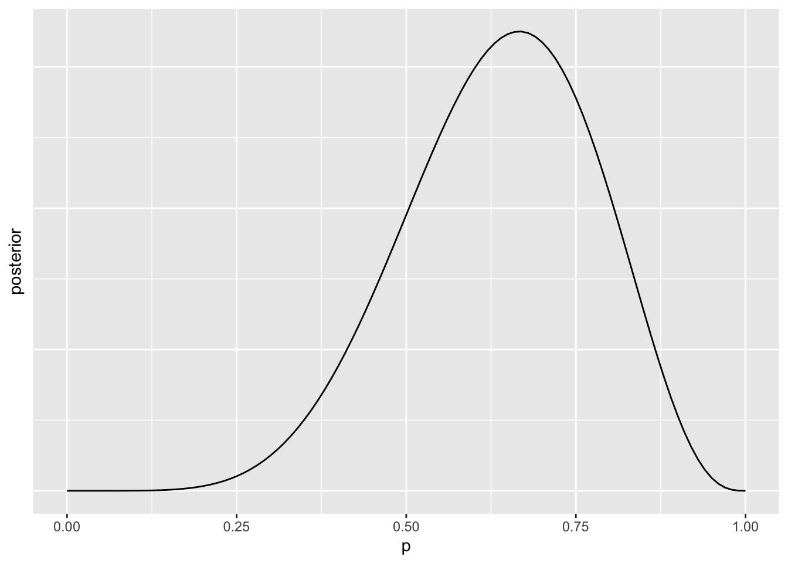
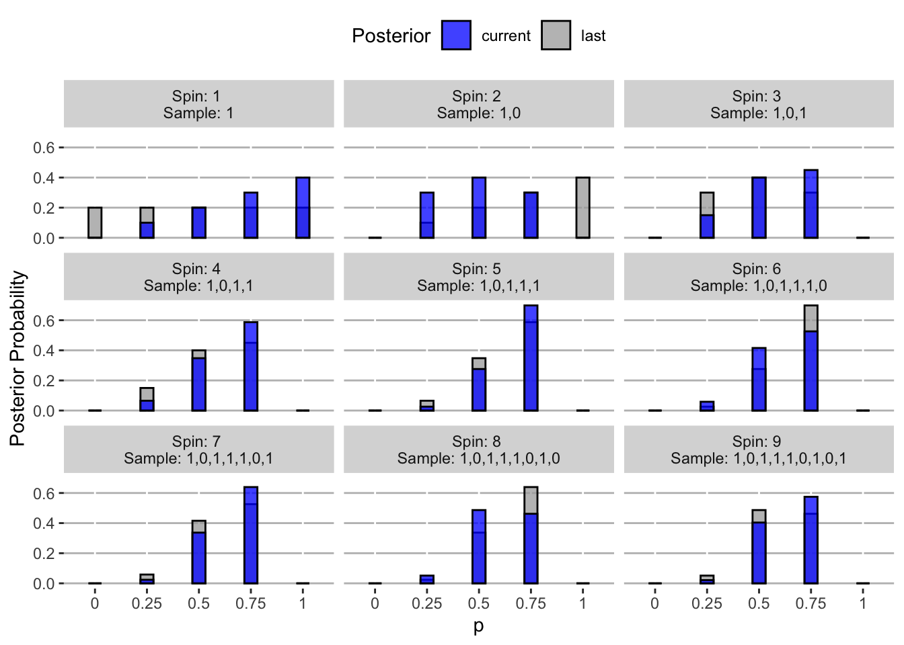
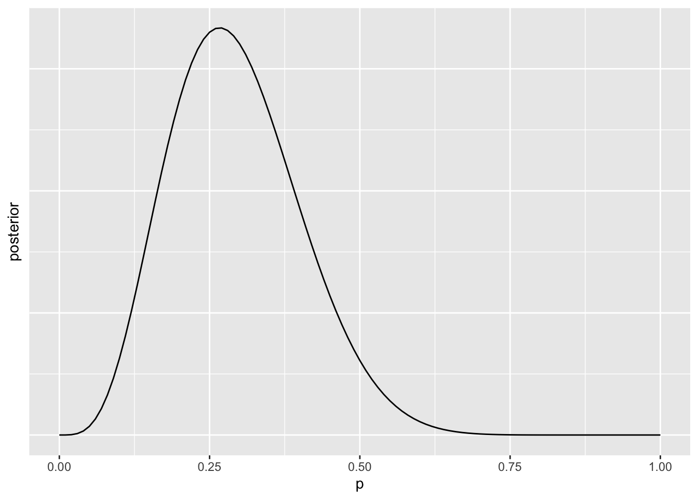
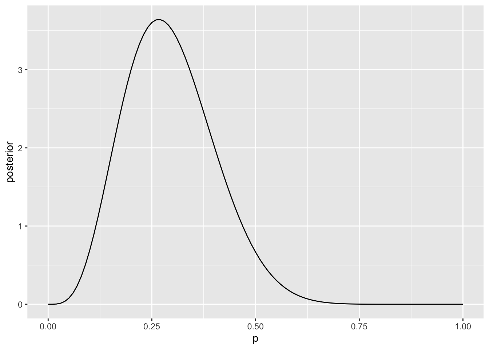
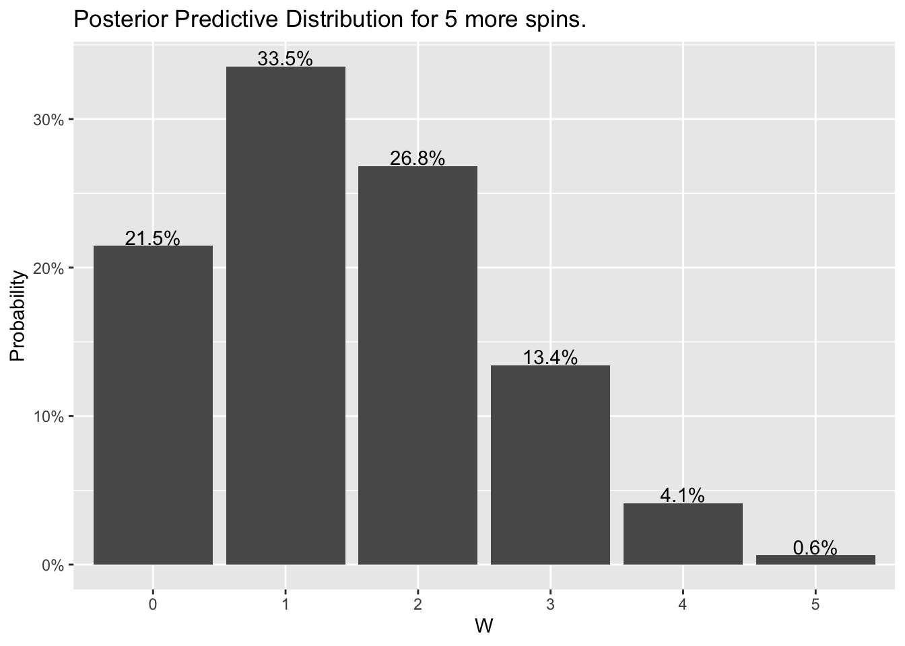
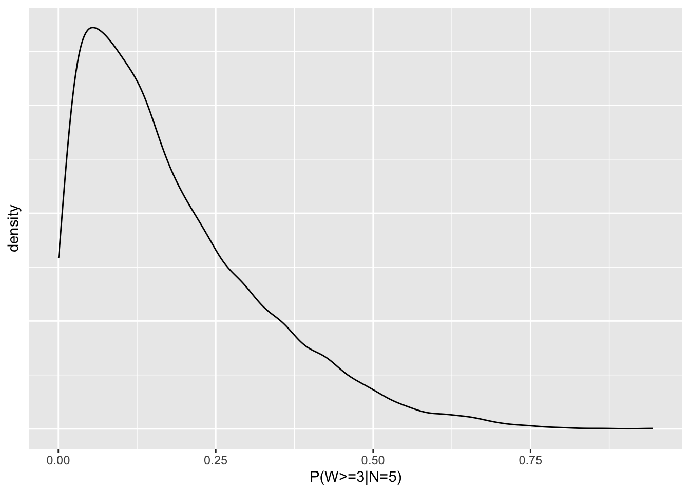
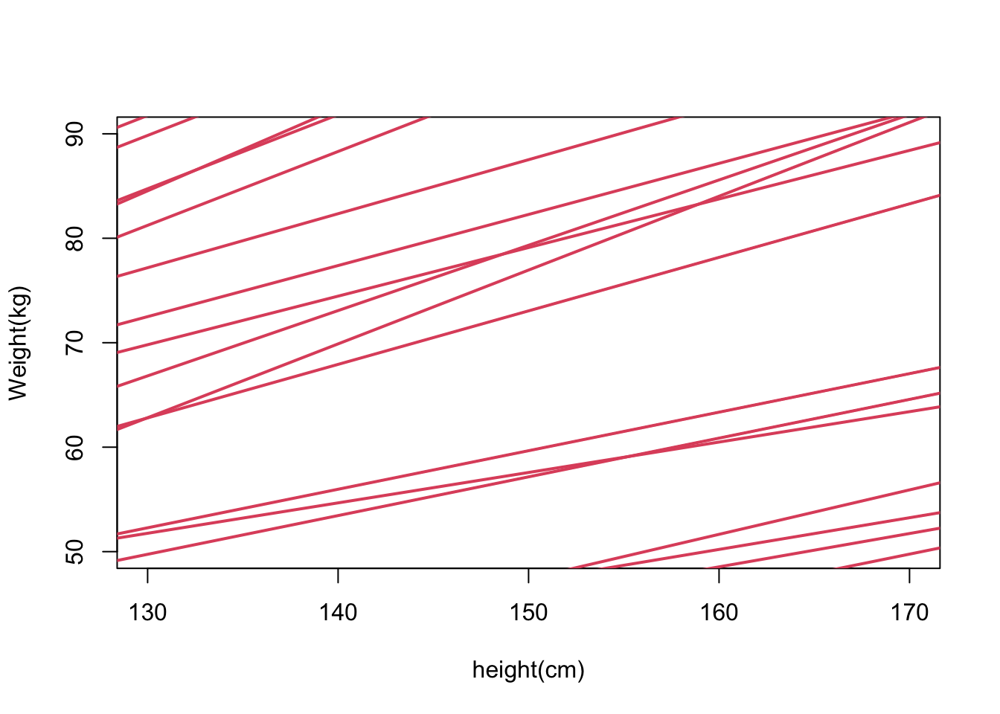
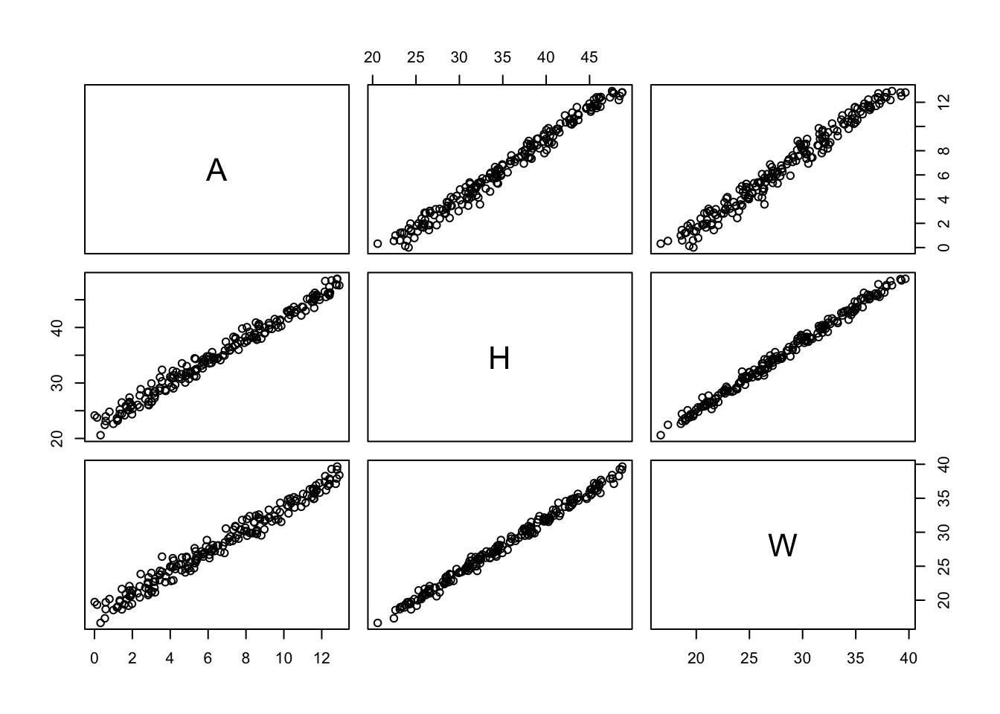

This document is intended to be a repository for my (raw, unedited) notes, interpretations, examples, and summaries from the Statistical Rethinking 2023 course (which Richard McElreath has graciously made available for free (!) covering his book). I’m not actually enrolled in the course, but just casually following the lectures and material. I have a strong interest in learning and incorporating Bayesian analysis and causal principles into my work, and this seemed like a great opportunity to build a foundation for that.
── Attaching core tidyverse packages ──────────────────────── tidyverse 2.0.0 ──
✔ dplyr 1.1.4 ✔ readr 2.1.5
✔ forcats 1.0.0 ✔ stringr 1.5.1
✔ ggplot2 3.5.1 ✔ tibble 3.2.1
✔ lubridate 1.9.3 ✔ tidyr 1.3.1
✔ purrr 1.0.2
── Conflicts ────────────────────────────────────────── tidyverse_conflicts() ──
✖ dplyr::filter() masks stats::filter()
✖ dplyr::lag() masks stats::lag()
ℹ Use the conflicted package (<http://conflicted.r-lib.org/>) to force all conflicts to become errors
1. Science Before Statistics
Week #
Lecture #
Chapter(s)
Week End
Notes Taken
1
1
1
1/6/2023
1/3/2023
Summary
This course focus is on scientific modeling via causal inference, which is focused on identifying causes in observational data. Causal Inference requires us to consider the mechanism of a phenomenon, and think about not only which variables cause other variables, but in what order–subject matter expertise is of utmost importance, and we don’t really depend on the data at hand until the very end of our inference process. Causal modeling must become the foundation to do analysis by–we can’t just do simple statistics in one project and then think about causal modeling in another–samples are from populations and there are causes associated with why we observed the sample we did, even if we’re answering very basic questions. Also, Bayesian modeling as a means to performing causal inference is not due to philosophical reasons (e.g., frequentist vs. Bayesian), it’s more so because a Bayesian framework provides the most natural tools to employ the specified causal model (i.e., if the frequentist model made sense for answering the causal question, we’d use it). The generative aspect of Bayesian modeling is one aspect in particular that makes it very inviting to represent the causal model in a statistical framework, and apply distributions. Finally, coding is not just a means to employ the math, but rather needs to be treated as part of the product, therefore employing software engineering principles, having documentation, making things reproducible. These things need to be employed if you really want to advance knowledge with confidence.
Notes
Overview
Most interested in Causal Inference, focusing on the science before the statistics
We must be able to talk about causes to obtain scientific knowledge, why else would we do it?
Causes can’t be extracted from data; must come from knowledge, assumptions
What is Causal Inference?
It is more than associations; associations are bi-directional, and correlation is only a basic measure of association;
It is all about intervention, directionality, and the prediction of the consequence of changing one variable on another (asking what-if?)
Causal Imputation
This is about being able to construct counterfactual outcomes
Asking the question, what if I had done something else?
We only observe a single outcome, but we want to know what would have happened had a certain intervention not taken place
Directed Acyclic Graph (DAG)
Nothing more than an abstraction about which variables cause which other variables
Shows the direction at which variables cause each other, but doesn’t specify how (i.e., effect shapes, etc.)
We can use this to know which things to control for, answer hypothetical interventions, under the assumption that the model is true
It provides a tool to answer very specific questions (queries); not necessarily all questions lead to the same statistical model, but the appropriate statistical model can be derived from the causal model depending on the question
Intuition Pumps: Gets the researcher to think about mechanism; great way to problem solve with SME’s without looking at the data (which is how it should be)
Golems (statistical models)
Metaphor for what a statistical model is; it’s a very useful machine that will do what it’s asked very well, but has no wisdom or forethought
Does not know the intent of the task
Statistical models are just objective tools, but we need causal models to know how and when certain models are actually appropriate
Statistical Models
Having a flowchart of tests is not useful, except maybe in the experimental setting (remember we’re talking observational data)
Statistical models/tests don’t make a clear relationship between the research and the data; it’s just math
Hypotheses & Models
We need generative causal models that are guided by the DAG’s
We need estimands that are statistical models justified by the generative models (how do we quantify what we’re after?)
Introduce real data at the end–this is the easy part
Justifying Controls
Cannot just control for everything in your dataset like is done so much in current research (e.g., colliders have undesired effect)
Need the causal model (DAG) to be able to deduce what should be controlled for based on the specific question that is asked
Adjustment Set: The variables determined appropriate to control for for a particular query
Why Bayesian?
Bayesian happens to be the easiest approach for generative models; it’s not because we’re stuck in a philosophical debate
Easiest way to take the scientific structure of the assumed model and generate it, since it naturally has direction (i.e., priors)
In most cases, Bayes can be appropriate (sometimes not–cut cake with chainsaw)
Programming and technical things tend to be taught this way, but we want to avoid this and document all the intermediate steps
We need to have an explicit workflow with clear steps
We need to treat coding/scripting seriously, not just a means to something (apply software engineering principles, documentation, quality control)
Understand what you are doing, document your work and reduce error, have a respectable scientific workflow, be professional and organized to maintain reproducible scientific knowledge, otherwise it’s all bullshit
Workflow
Theoretical Estimand (what are we trying to do?)
Scientific (Causal) Model (DAG + Generative)
Use 1 & 2 to build appropriate statistical model
Simulate from 2 to validate that 3 yields 1
Analyze the actual data
2. Garden of Forking Data
Week #
Lecture #
Chapter(s)
Week End
Notes Taken
1
2
2, 3
1/6/2023
1/6/2023
Summary
This scientific modeling framework provides an objective process to incorporate subjective (expert, scientfic) knowledge into the modeling process, enabling us to incorporate all of the uncertainty associated with those processes, predicated on the assumption of the causal model. Further, one of the key takeaways was that samples do not need to be representative of the population for us to provide good estimates. This is profound because generally we are taught the opposite, but because of the process, we can explicitly account for how we know/assume the data was generated, and use that information to create a good estimate of the quantity we are interested in. This is much more practical than the assumptions that are made in a typical frequentist analysis–which tend to be blindly made which ironically makes them more wrong than the “subjective” information in the generative approach. We can then use sampling of our posterior distribution(s) to answer questions about what might happen if we do another experiment, etc. (e.g., what if we take 10 more samples?). Instead of relying on asymptotics for the sampling distribution of a statistic (frequentist), we can just take samples from the posterior for any complex quantity of interest and get the uncertainty surrounding that. This is especially important once we are dealing with analytically intractable posteriors that don’t have closed form solutions. Instead of needing expert-level calculus knowledge for such problem, we just have to follow the same workflow as in this basic problem. After years of frequentist modeling, that is always full of limitations and disatisfaction in the results, this approach will lead to much more rewarding scientific discovery and confidence in the conclusions of research.
A check for understanding
Let’s go through and reproduce some of the content/concepts from slides but using our own explanation, implementation and interpretation along the way.
1. What is the objective?
The main question asked in the demonstration was what proportion of the globe is water?. Thus, the quantity we are interested in is a single quantity: the true proportion of of the globe that is water.
2. What is the sampling strategy?
We want to collect data to try to answer the question of interest. This will be done by spinning the globe and dropping a pin at a random location to indicate if it is either land or water. Some initial assumptions are
All points on the globe are equally-likely to be selected
Any given point on the globe is either land or water (only two possibilities)
There is no measurement error associated with indicating if the selected point was land or water
3. What is the generative model?
We want to consider the different variables at play here as it relates to any observed sample we get as a result of the sampling strategy. First and foremost, the primary unknown parameter is:
\[p=\text{proportion of water on the globe}\]
The other two at play (under this simplistic model) are:
\[N=\text{Number of globe spins} \hskip.5in W=\text{Number of spins resulting in water}\]Note that the number of spins resulting in land is just \(N-W\)
With the variables defined, the next step is determine how these variables relate to each other. We’ll use the following DAG:
flowchart LR
A(p) --> C(W)
B(N) --> C
This assumes that the number of water spins observed in our sample is determined by:
The true proportion of water on the globe
The total number of spins of the globe made (samples)
4. What is the statistical model/estimation procedure?
Let’s suppose we execute the sampling procedure which yields the following response vector:
Code
observed_sample <-c(1, 0, 1, 1, 1, 0, 1, 0, 1) # 1 = water; 0 = landW <-sum(observed_sample) # Number of water samplesN <-length(observed_sample) # Number of spinsW; N
[1] 6
[1] 9
We just need to count all of the ways that this sample could have arose across all of the different possibilities of \(p\), and then estimate \(p\) as that of where the sample was most likely to have occurred.
Basic (incorrect) solution with finite possibilities
We know that there are infinitely many possibilities for \(p\). Let’s first go through this assuming the globe is that of a 4-sided die, such that each side is land or water, implying the only possibilities are \(p \in (0,.25,.50,.75,1)\). For each possible value of \(p\), what is number of ways we could have observed our sequence of data? (thinking of the generative process, starting with \(N\) and \(p\)).
First of all, we can set our possible set of parameter values, and the number of “sides” of the globe this implies (i.e., we’re saying that there are only 4 sides and each one is either Water or Land, so we have a limited number of \(p\) values that could occur).
Code
# Set possible values for pp <-c(0, .25, .5, .75, 1)# Number of sides of globesides <-length(p) -1
For each of the 5 possible values of \(p\), how many combinations are there that produce our observed sequence of data?
Code
# Number of ways to observe sample for each p (this is the count of the possible sequences of indicators)ways <- (sides*p)^W * (sides*(1-p))^(N-W)ways
[1] 0 27 512 729 0
Now, of those possibilities, which was the most likely to occur?
It looks like \(p=0.75\) was the most likely value of those that are possible.
What is key to note about the posterior probabilities is that they are relative to the total across all values of \(p\). We simply found all of the raw counts associated with each \(p\) and then normalized them by the total to get the posterior probability. But this process was exactly the same thing as finding the likelihood of the data:
\[Likelihood = \prod_{i=1}^NP(X=x|p)\]
where \(X\) is the binary indicator from a single globe spin.
If we just look at all the possible sequences of indicators that could have occurred:
Code
# Total possible sequences of indicators (each one could be a 1 or a 0)total_possible_sequences <- sides^Ntotal_possible_sequences
[1] 262144
And then divide our original combination counts by that, we’ll get exactly the likelihood of the data:
Code
# Divide the total number of combinations we could have saw our sample, by the total number of possibilitieslikelihood <- ways / total_possible_sequenceslikelihood
So, we could also think of this problem in a different light (although it’s the SAME) and get the same result:
We could think of each observed value as an (unfair) coin flip (according to the value of \(p\)) and calculate the likelihood of the sequence of flips (which is actually what we already did, but this is more of the “traditional” way to think about it):
Code
# Likelihood of sequence of observed samplelikelihood2 <- p^W * (1-p)^(N-W)likelihood
We could also think of this as finding the likelihood of observing the total number of water spins since each flip is independent. This is also the same as before, except we’re accounting for all of the combinations to observe the total number of water flips, not just the particular sequence:
Code
# Make the normalizing constantnormalizing_constant <-factorial(N) / (factorial(W)*factorial(N-W))# Multiply the likelihood by the normalizing constant by the likelihood to get the true probability of the observed sample for each value of pprobability <- normalizing_constant * likelihoodprobability
Note that the normalizing constant had no effect on the posterior, but it did calculate the correct probabilities of the observed sample. In fact, this was just a Binomial distribution:
Code
# What is the probability of observing W water values in a sample of N globe spins for each p?dbinom(x = W, size = N, prob = p)
So what is going on here? We are after the distribution of probability weights associated with each possible value of \(p\) (which is what the posterior distribution is). In mathematical notation, we’re just applying Bayes’ formula:
\[
\begin{equation}
\begin{split}
P(p|sample)
& = \frac{P(p)P(sample|p)}{P(sample)} \\
& = \frac{P(p)P(W|p)}{P(W)} \\
& = \frac{P(p)P(W|p)}{P(W \cap p = 0) + ... + P(W \cap p = 1)} \\
& = \frac{P(p)P(W|p)}{P(p=0)P(W|p=0) + ... + P(p=1)P(W|p=1)} \\
\end{split}
\end{equation}
\] Each value of \(p\) is equally-likely to occur (uniform prior), so we can factor out that term:
\[
\begin{equation}
\begin{split}
\text{(from previous)}
& = \frac{P(W|p)}{P(W|p=0) + ... + P(W|p=1)} \\
(binomials) &= \frac{\binom{N}{W}p^W(1-p)^{(N-W)}}{\binom{N}{W}0^W(1-0)^{(N-W)} + ... + \binom{N}{W}1^W(1-1)^{(N-W)}} \\
& = \frac{p^W(1-p)^{(N-W)}}{0^W(1-0)^{(N-W)} + ... + 1^W(1-1)^{(N-W)}} \\
& = \frac{p^W(1-p)^{(N-W)}}{\text{Normalizing constant}} \\
\end{split}
\end{equation}
\] As you can see, the combination term also factors out, and the basic structure we’re left with is the likelihood piece that was found in all three (3) variations above: \(p^W(1-p)^{(N-W)}\). So when computing the posterior probability, they are relative to only terms dependent on the parameter of interest, so doesn’t matter if we use the counts, base likelihood, or the probability distribution–they are all the SAME. The counting process and the “forking data” approach is simply a means to breakdown the process of what’s happening behind the scenes in the math, so instead of just saying “do this integral” or “compute this product of the likelihood”, you’re picking apart each step of that process to gain intuition about what is happening. I’d imagine this is exactly the point of the Owl reference in the prior lecture.
Full solution: p is a continuous value
As mentioned before, the actual proportion of water on the globe can be any number between zero and one (\(p \in [0,1]\)), meaning that there are “infinite” sides to the globe. The derivation at the end of the previous section illustrates that the posterior distribution for \(p\) not restricted to any particular set of values. If we pick up where we left off:
\[
\begin{equation}
\begin{split}
P(p|data)
& = \frac{p^W(1-p)^{(N-W)}}{\text{Normalizing constant}} \\
\end{split}
\end{equation}
\] All we would need to do for the continuous version of \(p\) to make the posterior a formal probability distribution is to find the normalizing constant such that the integral over all possible values of \(p\) equals 1. Formally, with respect to \(p\),
\[\int_0^1 \frac{p^W(1-p)^{N-W}}{Constant} = 1\] This will ensure that the probabilities across all possible values of \(p\) sums to one. However, it doesn’t actually matter that we find that constant necessarily, because the posterior probability is just relative to the range of values of \(p\). So all that really matters is:
\[P(p|data) \propto p^W(1-p)^{N-W}\] We can then plug in our data and graph the resulting distribution to make inferences about \(p\).
\[P(p|data) \propto p^6(1-p)^3\]
Code
tibble(p =seq(0, 1, .01), # Approximate the range of p valuesposterior = p^W*(1-p)^(N-W) # Compute the posterior) %>%# Make a plotggplot() +geom_line(aes(x = p,y = posterior ) ) +theme(axis.ticks.y =element_blank(),axis.text.y =element_blank() )

After using our sample of 9, the probability weight for \(p\) tends to focus near 0.70. Note that the scale of the y-axis was removed to emphasize that it doesn’t really matter what it is. We would just need to be able to calculate the area under the curve to be able to assign real probabilities to questions like “what is the probability that the proportion of water is less than 0.5?”.
Note: In some cases, if we used used a different priors on \(p\) (e.g., Beta), the posterior will turn out to be an identifiable distribution which we know the normalizing constant.
Updating the posterior
So when we talk “Bayesian updates” or updating the posterior distribution, what does this mean? Since the point of it is to be able to update a model with new information, my gut used to tell me that we were somehow adding our current knowledge about the parameter into the new prior distribution, and then updating the new posterior with an updated prior and only using new data in the likelihood. While in a way this might be the right way to think about it (i.e., if I have a posterior right now, isn’t that the most current knowledge about the parameter, so if I want to collect more data, wouldn’t I want to use knowledge up to this point as the prior instead of reverting back to the original prior and just adding more data to the collective sample?), in these examples we were doing something different: we’re just seeing how the posterior changes as more data is added to the sample (i.e., observed sequence of data points).
Let’s start with just focusing on the basic example (i.e., 4 sided-globe) for now. We just need to loop through the observed sample, and calculate the posterior probabilities for each value of \(p\) as a new observation comes in:
Code
# Set the prior probability (uniform over the possibly choices)prior <-rep(1/length(p), length(p))# Set the current posterior as the prior (before any data collected)last_posterior <- prior# Make result setresults <-tibble()# For each value in the observed sample for(i in1:N) {# 1. Get the sub-sample sub_sample <- observed_sample[1:i]# 2. Compute metrics (the number of water samples, and the total number of spins) W_temp <-sum(sub_sample) N_temp <-length(sub_sample)# 3. Compute the likelihood for each p temp_likelihood <- p^W_temp * (1- p)^(N_temp - W_temp)# 4. Posterior temp_posterior <- temp_likelihood /sum(temp_likelihood)# 5. Add to results results <- results %>%bind_rows(tibble(sample = i,sequence =paste(sub_sample, collapse =","), p,likelihood = temp_likelihood,current = temp_posterior,last = last_posterior ) )# Set the new last posterior last_posterior <- temp_posterior}results %>%# Send down the rowspivot_longer(cols =c(last, current) ) %>%# Make a plotggplot() +geom_col(aes(x =factor(p),y = value,fill = name ),color ="black",alpha = .75,width = .25,position ="identity" ) +facet_wrap(~paste0("Spin: ", factor(sample), " \nSample: ", sequence) ) +theme(legend.position ="top",panel.background =element_blank(),panel.grid.major.y =element_line(colour ="gray") ) +xlab("p") +ylab("Posterior Probability") +labs(fill ="Posterior" ) +scale_fill_manual(values =c("blue", "darkgray") )

The blue bars show the posterior probability for each possible value of \(p\)after the newest observation was made, and the gray bars show it before the newest observation was made. This illustrates the incremental impact of adding more data to the sample on the resulting posterior distribution.
We can apply this same process to the continuous (correct) possible set of values for \(p\) (in fact, we’ll create the curves by performing the exact same procedure to a larger, discrete set of values but make the display appear continuous):
Code
# Approximate the set of inifinite p-values by a large set of discrete onesp_continuous <-seq(0, 1, .01)# Set the prior probability (uniform over the possibly choices)prior <-rep(1/length(p_continuous), length(p_continuous))# Set the current posterior as the prior (before any data collected)last_posterior <- prior# Make result setresults <-tibble()# For each value in the observed sample for(i in1:N) {# 1. Get the sub-sample sub_sample <- observed_sample[1:i]# 2. Compute metrics (the number of water samples, and the total number of spins) W_temp <-sum(sub_sample) N_temp <-length(sub_sample)# 3. Compute the likelihood for each p temp_likelihood <- p_continuous^W_temp * (1- p_continuous)^(N_temp - W_temp)# 4. Posterior temp_posterior <- temp_likelihood /sum(temp_likelihood)# 5. Add to results results <- results %>%bind_rows(tibble(sample = i,sequence =paste(sub_sample, collapse =","), p_continuous,likelihood = temp_likelihood,current = temp_posterior,last = last_posterior ) )# Set the new last posterior last_posterior <- temp_posterior}results %>%# Send down the rowspivot_longer(cols =c(last, current) ) %>%# Make a plotggplot() +geom_area(aes(x = p_continuous,y = value,fill = name ),color ="black",alpha = .65,position ="identity" ) +facet_wrap(~paste0("Spin: ", factor(sample), " \nSample: ", sequence) ) +theme(legend.position ="top",panel.background =element_blank(),panel.grid.major.y =element_line(colour ="gray"),axis.ticks.y =element_blank(),axis.text.y =element_blank() ) +xlab("p") +ylab("Posterior Probability") +labs(fill ="Posterior" ) +scale_fill_manual(values =c("blue", "darkgray") )
Again, these curves are actually approximated here. In practice, we would need to calculate the area underneath the curve to get exact answers about probabilities. Note: We could parameterize the Beta distribution to get the normalizing constant for calculating the actual posterior probabilities that fits this distribution.
Homework
Suppose the globe tossing data had turned out to be 4 water and 11 land. Construct the posterior distribution.
We’ll cheat a little bit and use the approach of using a large, discrete list of possible values for \(p\), and plot it as if it is continuous (we could also just use the Beta distribution). With that, all we need to do is change the values of \(W\) and \(N\) and use the same code as above.
Code
W_new <-4N_new <-15tibble(p =seq(0, 1, .01), # Approximate the range of p valuesposterior = p^W_new*(1-p)^(N_new-W_new) # Compute the posterior) %>%# Make a plotggplot() +geom_line(aes(x = p,y = posterior ) ) +theme(axis.ticks.y =element_blank(),axis.text.y =element_blank() )

Using the posterior distribution from (1), compute the posterior predictive distribution for the next 5 tosses of the same globe.
Okay here I’ll finally acknowledge that the posterior can be written as a Beta distribution, which gives us the normalizing constant needed to make it a real probability distribution (i.e., the area sums to 1). It has the following probability density function (PDF):
\[f(x|\alpha, \beta) = \frac{\Gamma(\alpha+\beta)}{\Gamma(\alpha)\Gamma(\beta)}x^{\alpha-1}(1-x)^{\beta-1}\] where \(x \in [0,1]\), \(\alpha, \beta > 0\), and \(\Gamma(n) = (n-1)!\). If we make the following reparameterizations from our set of variables:
Note that since \(p\) is continuous, this function represents the probability density at any particular value of \(p\). To get any positive probability, we must integrate this function over a range of \(p\) values. Hence the \(f\) notation.
Let’s quickly plug in \(W=4\) and \(N=15\) to confirm (at least visually) that this function produces the same posterior we made to answer the last question. We’ll do this by evaluating the density of the derived Beta distribution at range of possible \(p\) values. Note we’ll have to use the parameterizations for the Beta distribution that are built into R.
Code
# Reparameterizealpha <- W_new +1beta <- N_new - W_new +1# Make a data frametibble(p =seq(0, 1, .01), # Approximate the range of p values (same as before)posterior =dbeta(p, shape1 = alpha, shape2 = beta) # Compute the actual posterior density) %>%# Make a plotggplot() +geom_line(aes(x = p,y = posterior ) )

From inspection, it appears that they are essentially the same curves. Note that this time I kept the y-axis labels because this is the density for the actual probability distribution.
So back to the question: how do we find the posterior predictive distribution for the next 5 globe spins? Well, if the globe is spun 5 more times, then we can get water on 0, 1, 2, 3, 4, or all 5 spins. Our quest is to figure out the likelihood of each of those possible outcomes based on what we currently know about \(p\) (i.e., the posterior distribution). To do this, we’ll use our posterior distribution to run a simulation of the experiment using the following steps:
Select a random value of \(p\) from the posterior
Draw a random \(binomial\) realization where \(N=5\)
Repeat steps i-ii 10000 times
Graph the results
Code
# Set some parametersset.seed(123)n_experiment <-5# Number of new spins we're going to conducts <-10000# Number of simulations# 1. Draw random values of p from the posteriorp_rand <-rbeta(n = s, shape1 = alpha, shape2 = beta) # Same parameters as before# 2. For each p, run a binomial experiment (represents samples of W)w_rand <-rbinom(n = s, size = n_experiment, prob = p_rand)# Make a data frametibble(w = w_rand) %>%# For each wgroup_by(w) %>%# Compute the totalsummarise(count =n() ) %>%# Add proportionmutate(proportion = count /sum(count) ) %>%# Make a plotggplot(aes(x =factor(w) ) ) +geom_col(aes(y = proportion ) ) +geom_text(aes(y = proportion,label =paste0(round(proportion*100,1), "%") ),vjust =-.1 ) +scale_y_continuous(labels = scales::percent ) +xlab("W") +ylab("Probability") +labs(title =paste0("Posterior Predictive Distribution for ", n_experiment, " more spins.") )
Another way to think about what we’re doing here is:
Find the collection of density values for all \(p\) in the posterior distribution
Find the probability distribution of the possible outcomes from a Binomial distribution where \(N=5\) for all possible values of \(p\) (i.e., independent of our posterior)
Take the average probability value for each possible outcome in (ii) over all values of \(p\), weighted by the posterior density in (i)
Code
# Make a set of p representive of its domainp_alt <-seq(0, 1, .001) # Supposed to represent continuous p# 1. Posterior density values for each pposterior_alt <-dbeta(p_alt, shape1 = alpha, shape2 = beta)# 2. Probability distribution for each outcome for each ppossible_outcomes <-0:n_experimentlikelihood_alt <- possible_outcomes %>%map_df(~tibble(binomial_probability =dbinom(x = .x, size = n_experiment, prob = p_alt),p = p_alt,outcome = .x ) )# 3. Get the posterior predictive distributionposterior_predictive_distribution <- likelihood_alt %>%# Join to attach the posterior density weight to each value of pinner_join(y =tibble(p = p_alt,posterior_density = posterior_alt ),by ="p" ) %>%# For each possible outcomegroup_by(outcome) %>%# Compute the weighted-average probabilitysummarise(posterior_probability =sum(binomial_probability * posterior_density) /sum(posterior_density) )# 4. Make a plotposterior_predictive_distribution %>%ggplot(aes(x =factor(outcome) ) ) +geom_col(aes(y = posterior_probability ) ) +geom_text(aes(y = posterior_probability,label =paste0(round(posterior_probability*100,1), "%") ),vjust =-.1 ) +scale_y_continuous(labels = scales::percent ) +xlab("W") +ylab("Probability") +labs(title =paste0("Posterior Predictive Distribution for ", n_experiment, " more spins.") )

The distributions from the two approaches are merely identical (slight differences due to simulation variability and inexact integration).
Use the posterior predictive distribution from (2) to calculate the probability of 3 or more water samples in the next 5 tosses.
Using the posterior predictive distribution above, we can look at the percent of simulations that resulted in 3 or more water samples:
Code
mean(w_rand >=3)
[1] 0.1771
So there is a 0.177 probability of 3 or more water samples in the next 5 tosses. However, this point estimate is not totally sufficient because we haven’t reported any uncertainty associated with it. Since we know that \(W|p \sim Binomial(n,p)\), the \(P(W>=3|p,N)\) is already determined. In this case, we can just calculate it for each random value of \(p\) sampled from the posterior:
Code
# Compute the binomial probabilityprob_binom <-1-pbinom(q =2, size = n_experiment, prob = p_rand)# Make a plotggplot() +geom_density(aes(x = prob_binom ) ) +theme(axis.ticks.y =element_blank(),axis.text.y =element_blank() ) +xlab("P(W>=3|N=5)")

This one has been stumping me a bit, and I’m not totally confident this is the correct result. Another way I was thinking about it was similar the alternative in (2), namely that we are finding the \(P(W>=3|N=5)\) for each value of \(p\), and then weighting that by the posterior density of \(p\). However, it seems like we should be sampling from the predictive distribution in (2) somehow, but if we do that it seems like the precision of our estimates would then just be determined by the number of simulations we run, not the data, which also doesn’t make sense.
Notes
Goal: Estimate the percent of the globe that is covered in water
Think of spinning the globe and stopping on a point and repeating many times
How do we use that collection of points to come up with an estimate? That’s the goal of today’s lecture
First thought is just indicate each time whether land or water appear as the point; however, how does the shape of the globe impact the likelihood that I will come up with land or water on a “random” toss? Has to do with sampling strategy
Define a generative model
Think conceptually about scientifically how the sample was produced (how do variables influence one another)
Variables: Things we want to observe/estimate or things we actually do observe
\[\bf{p} = \text{proportion of water}\hskip.5inW=\text{water observations}\]\[N = \text{number of tosses}\hskip.5inL=\text{land observations}\]
Define a specific estimand
Were interested in the true proportion of water p
Design a statistical way to produce estimate
How are these related to each other?
N influences W and L (the more tosses leads to change on other variables)
p also influences W and L (i.e., the true proportion dictates the number of water observations and land observations)
The DAG shows relationships, but not what the relationships are. We can say \(W,L=f(p,N)\); what is \(f\)?
Assume a model (e.g., \(p\) = .25, then count likely the sample was under that model, do that for all possible models)
Test (3) using (1)
Code
sim_globe <-function(p = .7, N =9) {sample(c("W","L"), # Possible observationssize = N, # Number of tossesprob =c(p, 1-p), # The probability of each possible observationreplace =TRUE) }sim_globe()
If our procedure doesn’t work when we know the answer, it certainly won’t when we don’t know the answer
Infinite sample:
\[p^W(1-p)^L\] Posterior probability:
\[p = \frac{(W+L+1)!}{W!L!}p^W(1-p)^L\]
This is a Beta distribution, and the likelihood was a Binomial.
The minimum sample size for Bayesian analysis is 1.
The shape of the posterior distribution embodies the sample size
No point estimate, we work with the entire posterior distribution
The distribution is the estimate; always use the entire distribution, never a single point
The fact that an arbitrary interval contains an arbitrary value is not meaningful
Analyze sample, summarize
Implications depend on entire posterior
Average over the uncertainty of the posterior
What can we do with the posterior distribution?
We can take samples from it, and then do calculations with the samples
Posterior Prediction
Given what we’ve learned, what would happen if we took more samples?
Sampling distribution (predictive distribution) of draws represents the likelihood of each outcome in a new experiment for a particular value
The posterior predictive distribution then represents the entire distribution of the statistic of interest, and contains all the uncertainty around that estimate (analogous to the sampling distribution of a statistic (e.g., mean) in the frequentist paradigm, except this is completely model-driven by the posterior instead of based on asymptotics in the frequentist approach)
Sampling turns calculus into a data summary problem; this is important when models get complex and numerically intractable to compute by hand
This generative, Bayesian framework is the optimal approach for causal estimation if your model is correct.
It honestly carries out the assumptions we put into it, using logical implications
Quantitative framework/asset that activates our qualitative knowledge as scientists, subject matter experts, etc. Let’s the subjective and objective work together. Subjectivity is expertise.
Misclassification
Use circles around variable in DAG to represent unobserved vs. observed variables
Imagine the true number of water samples (W) are unobserved (e.g., measurement error, data error, etc.)
We observe a contaminated W (called W*) that is the misclassified sample
W* is caused by the measurement process M. We can get get back to the correct posterior distribution for p if we use M through W*.
The posterior is honest about the uncertaintly induced by the misclassification process
When there is measurement error, model it instead of ignoring it (same for missing data, compliance, inclusion)
Key point: Samples do not need to be representative of population to provide good estimates, since we can correct them through our causal diagram (modeling the source, sampling process, etc.)
This concept may also arise if, for example, the globe was not spun equally likely for every point to be selected.
3. Geocentric Models
Week #
Lecture #
Chapter(s)
Week End
Notes Taken
2
3
4
1/13/2023
1/10/2023
Summary
We don’t actually need data to construct a model. Our prior distributions, which account for our baseline knowledge about what reasonable values for unknown parameters may be, can produce estimates on their own. A bare minimum strategy is to choose these such that before seeing data, the output of our model produces scientifically reasonable results–there is no reason to allow our model to produce results that we know cannot happen. Then, our data can be introduced to help guide the parameters to an area of focus. In this sense (thinking of the example of points bumping around in parameter space), the data we collect is really just a tool for our model–the model is the central focus, the data just helps the model go to where it needs to go. Also, the idea that there are no correct priors and that priors are just (normalized) posteriors from previous data, make the idea of Bayesian updating very intuitive. It will be interesting to see in coming lectures how we can extend this linear model framework to more “real life” problems with observational data that have potentially tens or hundreds or thousands of potential drivers, and strategies for accounting for the most important ones. Obviously these basic examples are great to build a foundation, but it seems like a huge (sometimes impossible) hurdle to have the time and resources to be able to fully vet out expert-driven causal diagrams and generative models that fully account for all the things, especially in fast-paced environments when everyone is just so busy and there are so many projects to attend to. I’d imagine this is one of the reasons why frequentist analysis persists so much (at least in medical research), because it’s the way it’s been done and therefore you can get more things done faster, even though in an ideal state a Bayesian approach is the right way to go. Definitely something I’ve thought about time and time again–how can we balance the rigor and detail needed to construct the appropriate models to achieve better inference while still being efficient with peoples’ time? Part of it probably has to do with proving to stakeholders that the inference gained from the “quicker” way is less informative (or just plain wrong) compared to the more involved approach.
Notes
Statistical models can attain arbitrarily accurate predictions without having any explanation or accurate structure (i.e., the model is just plain wrong, but happens to produce accurate predictions at the right time)
Example of this is a previous explanation of orbit pattern of Mars: assuming Earth at the center (geocentric), Mars orbits around Earth but also it’s own local orbit (epi-cycles). Using this model, they got very accurate predictions, but this mechanism is completely wrong.
Orbits are actually elliptical and around the sun, not Earth
Even though the first one predicts accurately, because the structure/mechanism is wrong, it doesn’t extend or generalize to other things. However, the correct mechanism is able to explain orbit patterns of all planets in the solar system.
Linear regression is a large class of statistical golems
Geogentric: describes associations, makes good predictions; mechanistically always wrong (but useful), very good approximation; meaning doesn’t depend on the model, depends on an external causal model. Nothing wrong with it unless you actually believe it is the true mechanism.
Gaussian: Abstracts away from detail of general error model; mechanistically silent. General argument about symmetry of error.
Gaussian
Example: Flip coin, each person take a step to left or right depending on heads/tails, measure distance from center; makes a normal distribution. Why?
There are more ways for a sequence of coin tosses to get you close to the middle than there are to get you to the left or right
Many natural processes attract to this behavior because it is adding together small differences
Two arguments:
Generative: summed fluctuations tend towards normal. Ex. growth–added fluctuations over time, same age weight tends to be gaussian
Inferential: estimating mean/variance. Best to use since least informative (maximum entropy)
Variable does not need to be normally distributed for normal model to be useful. Machine for estimating mean/variance. Contains the least assumptions. (central limit theorem)
Skills/Goals for Lecture
Learn a standardized language for representing models (generative and statistical)
Calculate posteriors with multiple unknown parameters
How to construct and understand linear models; how to construct posterior predictions from them
Reminder of the owl
State a clear question; descriptive, causal, anything; but needs to be clear
Sketch causal assumptions using DAGs; good way for non-theorists to realize they have a lot of subject knowledge and can get it on paper
Define a generative model; generates synthetic observations
Use generative model to build estimator; causal/generative assumptions embedded
Test, analyze
Profit: we realize our model was useful, or terrible; either way we gain something
Describing models
Lists variables
Define each variable as a deterministic or distributional function of other variables
Exercise
Goal: Describe the association between adult weight and height
Height causes weight H–>W<–(U) (unobserved influences on body weight)
Generative/scientific model: \(W=f(H,U)\), \(W=\beta H + U\)
Generally more useful to look at the lines (parameter implications together), instead of individual parameters
Quadratic approximation
Approximate the posterior distribution using a multivariate Gaussian distribution
Use the quap function in the rethinking package
Prior Predictive Distribution
Should express scientific knowledge, but softly
We can make the model make predictions without using data
Not make ranges that represent the data, but rather just those that make sense based on current knowledge
Account for basic reasonable constraints: In general, patients with more weight have more height, and the weight is less than the height, so \(\beta\) is probably between \([0,1]\).
Use these to define some lines based on the assumptions
Code
n <-1000a <-rnorm(n,0,10)b <-runif(n,0,1)plot(NULL,xlim=c(130,170),ylim=c(50,90),xlab="height(cm)",ylab="Weight(kg)")for (j in1:50) abline(a=a[j],b=b[j],lwd=2,col=2)

Some of these are probably not plausible (e.g., high height with low weight). Slopes look good but not intercept
We can adjust as needed to create what makes sense
There are no correct priors; only scientifically justifiable priors
Validate Model
Bare minimum to test statistical model
Not because you wrote it, more so to make sure your model works
Analyze data
Plug in your data set into your process
Parameters are not independent, can’t interpret as such
Push out posterior predictions
4. Categories and Curves
Week #
Lecture #
Chapter(s)
Week End
Notes Taken
2
4
4
1/13/2023
1/11/2023
Summary
The idea of total vs. direct effects is about specifying the statistical model that will allow you to observe the complete effect (i.e., including differences that could be explained by something else in the model) compared to parsing out differences explained by the variable after adjusting for effects explained through other variables. In the lecture example, the total causal effect of sex on weight was determined by using a (Bayesian) intercept-only model, which showed considerable difference is mean weights between male/female. However, when assessing the direct causal effect, a parameter was added to fit separate slopes for male/female in order to block out the effect of sex on weight that is observed through other causes (in this case, height), such that the resulting estimator looked at mean differences in weight at each height–the posterior distribution for this difference yielded little to no direct effect, indicating that most of the difference in weight between male/females is due to height differences. Another interesting aspect of this lecture was how to think about which way an arrow should go when drawing the causal diagram. You should think of the interventions we are willing to consider, and which make logical sense. For example, we drew \(H \rightarrow W\) because, given a height, it makes sense to employ interventions (such as weight loss program, exercise, etc.) that could presumably impact the resulting weight, but it doesn’t make a lot of sense to think of trying to change someone’s height given their weight. Also, declaring something as a cause of something, generally you first want to think about whether an intervention can be employed, but if not can still make sense if it is a proxy for something else (e.g., age encapsulates time, among many other things that presumably do cause height). We can use flexible curves to fit things (e.g., splines), but we want to make sure we vet out any erroneous areas where estimates don’t make sense, and add necessary restrictions to alleviate. So far, these lectures have given great optimism and excitement for how to approach modeling. I want to be confident in the models I produce, and I think the generative framework is the right approach to be able to believe in the results you are producing. I see so much published research from observational data that declare something statistically significant for a given research hypothesis and say “we adjusted for all these confounders”. Even if I feel fine about the math/statistical procedure, I’m always skeptical about the conclusions that are drawn from it, and quite frankly, don’t feel like it means much at all for really making a decision–there are just too many limitations about all sorts of things. The generative approach gives the tools and rigor to be much more confident in the results, and if we can be more demanding of that rigor, time and energy, it should yield more benefit in the long run. I’d rather spend more time getting to a confident conclusion than just pumping out results.
A check for understanding
During (and after) the lecture, it took me a while to gain intuition about what was happening in the generative simulation for the model:
flowchart LR
A(Sex) --> C(Weight)
A --> B(Height)
B --> C
The code was written in the following way:
Code
# S = 1 female, S = 2 malesim_HW <-function(S,b,a) { N <-length(S) H <-ifelse(S==1,150,160) +rnorm(N,0,5) W <- a[S] + b[S]*H +rnorm(N,0,5)data.frame(S,H,W)}# Generate dataset.seed(123)S <-rbinom(100,1,.5) +1dat <-sim_HW(S, b=c(.5,.6), a=c(0,0))head(dat)
S H W
1 1 151.2666 79.57199
2 2 159.8573 99.75957
3 1 149.7856 76.55384
4 2 166.8430 95.06392
5 2 158.8711 94.72542
6 1 157.5824 77.38920
First, the indexing used here b[S] was odd because b is a vector of length 2, and S is a vector of length 100. But all it is doing is making a vector of length 100 by looking up the index of b at each spot (since S is either 1 or 2). I didn’t know you could index like that in R but I guess you learn something everyday. Anyway, that was not the real thing that confused me.
In the lecture, he states that the a term represents the direct effect of sex on weight, and the b term represents the indirect effect (i.e., proportionality/slope for each sex). It’s clear that there are separate lines created for each sex, and you can see the form of an intercept and slope for each one. In my mind, I’m thinking this has to be similar to an interaction in the model, but it wasn’t intuitive to me how this really played out and/or there was something different going on here. After some thought on a notepad, it is exactly what I was thinking–just a linear model with an interaction term between sex and height, though it is reparameterized a little to create the symmetry of effects as discussed in the lecture. Anyway, here is how it translates:
Currently, we have that the sex indicators are as follows:
\[S = 1 (female), 2(male)\] Then, the effect of height on weight for each sex is as follows:
\[b=(b_{S_1},b_{S_2}) = (0.5, 0.6)\] Finally, the intercept within each line is:
\[a=(a_{S_1},a_{S_2})=(0,0)\] This leads to:
\[W_{S_1} = a_{S_1} + b_{S_1}H + \epsilon_i = .5H+\epsilon_i\]\[W_{S_2} = a_{S_2} + b_{S_1}H + \epsilon_i = .6H + \epsilon_i\] We could think of this as a single model equation with four (4) regression coefficients looking like the following:
\[W = \beta_1 S_1 + \beta_2 S_2 + \beta_3 H \times S_1 + \beta_4 H \times S_2 + \epsilon_i\] where
\[S_1 = 1 \text{ if female; 0 otherwise}\]\[S_2 = 1 \text{ if male; 0 otherwise}\] There is no intercept term in the model. Instead, there are symmetric parameterizations for males and females, instead of making the effects relative to one another (which, as mentioned in the lecture, makes it more intuitive to make priors for). The design matrix for this model would then look something like:
Basically, every time S1 is 1 (female), then S2 is 0 (male), as well as the corresponding value for H.
I may have to rethink what I just wrote a bit as the the \(S_1\) and \(S_2\) columns are actually completely redundant, so not sure if this is right yet
So how would we parameterize this in a more classical regression model? If we just rewrite a few things. Let:
\[S=(0(female), 1(male))\] Then we assume the model is:
\[W = \beta_0+\beta_1 S+\beta_2 H+\beta_3 S\times H + \epsilon_i\] If we translate parameter values from the example,
\[\beta_0 = 0 \hskip.1in \beta_1 = 0\]\[\beta_2 = .5 \hskip.1in \beta_3 = .6-.5 = .1\] We then get:
This makes it much more clear why the direct effect is zero, since the main effect of sex is zero in this model. We only see an effect from sex through the interaction with height, which is what is known as the indirect effect.
Homework
From the Howell1 dataset, consider only the people younger than 13 years old. Estimate the causal association between age and weight. Assume age influences weight through two paths. First, age influences height, and height influences weight. Second, age directly influences weight through age-related changes in muscle growth and body proportions. Draw the DAG that represents these causal relationships. And then write a generative simulation that takes age as an input and simulates height and weight, obeying the relationships in the DAG.
First, we’ll import the dataset directly from the package’s Github repository. We will filter to those < 13 years old, and convert height to inches, and weight to lbs:
Code
howell1 <-read_delim(file ="https://raw.githubusercontent.com/rmcelreath/rethinking/master/data/Howell1.csv",delim =";" ) %>%# Keep those younger than 13filter(age <13) %>%# Convert the units (more intuitive for me)mutate(height = height /2.54,weight = weight *2.205 )
Rows: 544 Columns: 4
── Column specification ────────────────────────────────────────────────────────
Delimiter: ";"
dbl (4): height, weight, age, male
ℹ Use `spec()` to retrieve the full column specification for this data.
ℹ Specify the column types or set `show_col_types = FALSE` to quiet this message.
Next, we can write the causal diagram as described:
flowchart LR
A(Age) --> C(Weight)
A --> B(Height)
B --> C
If we let
\[A=Age \hskip.1in H=Height \hskip.1in W=Weight\]
Then, we assume that:
\[H = f_H(A) \hskip.2in W = f_W(A,H)\] Finally, we can write the generative simulation to produce synthetic data governed by the DAG:
Code
# Simulating synthetic childrensim_children <-function(N) {# 1. Generate uniform ages A <-runif(N, 0, 13)# 2. Generate heights as a linear combination of age H <-22+2*A +rnorm(N, mean =0, sd =1)# 3. Generate weights as a linear combination of age and height W <- .8*H +rnorm(N, mean =0, sd = .5)# Make a data frametibble(A, H, W) }
We first generate ages uniformly from 0 to 13, so
\[A \sim Uniform(0,13)\]
Then, we generate heights from a normal distribution with means that are linearly related to the age.
\[H \sim Normal(\mu =22 + 2 \times A, \sigma = 3)\] Notice the intercept term to ensure a positive height for children who are 0 years old. Note: A distribution like the Gamma may be better here to ensure we don’t get negative heights. For younger ages, I would assume that the distribution of heights has a little right-skew. In any case, we’ll move forward with the Normal distribution here for simplicity sake.
Then we generate the weights as a linear function of the observed age and heights.
\[W \sim Normal(\mu=.8H, \sigma = .5)\] We make the assumption that there is a linear relationship between weight with age and height, and that for any age, the increase in mean weight per inch increase in height is the same. In fact, the effect for age is 0 since it is observed through height.
Code
# Simulate some childrenset.seed(123)simmed_children <-sim_children(200)plot(simmed_children)

Use a linear regression to estimate the total causal effect of each year of growth on weight.
Now suppose the causal association between age and weight might be different between boys and girls. Use a single linear regression, with a categorical variable for sex, to estimate the total causal effect of age on weight separately for boys and girls. How do boys and girls differ? Provide one or more posterior contrasts as a summary.
Notes
The linear regression can approximate anything, so we need to design it with the causal model in mind
Generative models + multiple estimands, we’ll have multiple estimands
Need post-processing of posterior distribution to gain inference of joint distributino
We require categories, splines, etc. to build causal estimators
Need to stratify by category to get at the estimands we want (separate lines)
Example
Extend example above to include patient sex, age
Need to determine how height, weight, sex are causally related (add to DAG), and statistically related
To determine which way the arrows go, think about the interventions you’re willing to consider
Don’t have to draw them, but the implied unobserved causes of each variable are implied
These are ignorable unless shared across variables
Ex. temperature is a cause of sex and weight in some species
What is the causal effect of S on W?
Accounts for direct and indirect effect
We can also ask what is the direct causal effect of S on W?
These questions require different models
Generally want to assign the same prior for parameters for each category level (below)
Using indexing is advantageous because you have symmetry such that all parameters can get the same prior, they are all interpreted the same within their levels
Using indicators makes parameters relative to other levels, which causes you have to put priors on other parameters because it is an adjustment parameter (one is an average, one is an adjustment to an average)
Simulate one data set of all males, another of all females, look at the average difference in weight
This is the actual causal effect
Then you can generate a random data set, run the modeling process, and then ensure that the model provides the expected estimate
Look at the posterior distribution of the mean difference, and randomly draw samples from the individual posteriors and compute the differences to answer questions like “what is the probability that a randomly selected male will be heavier than a randomly selected female?”
This was basically just an intercept-only model for sex, and the effect due to height would be captured in that difference
Direct Effect
How do we partial out the indirect effect of Height (block it)?
Stratify by height to block the association between S and W that is transmitted through H
Difference in intercept, the indirect is slope differences
Here, the model allows for separate slopes by sex, so we can tease out the impact of height
Center the height to make the interpretation of the intercept be the average
Makes priors more intuitive, and computation easier
In this case, nearly all the total effect of sex on weight is explained through height (the direct effect (posterior of the difference between weights at each height) is nearly 0 at all heights)
Curve Fitting
We use linear models to do this; i.e., it’s not mechanistic, but we use it wisely
Strategies
Polynomials: Don’t do it; no local smoothing, only global; learn to much from data in regions that lie far away
It’s not worth having a model that looks OK for most of the data that we know is completely erroneous (e.g., parabola at some point shows babies get heavier as their height decreases, which we know is wrong); even though this is a small portation of observations, it’s still knowingly wrong, so why use it?
Splines & GAMs: Not as bad as polynomials; add total many locally trained terms
Splines
Flexible curve that will find trends
B-splines are linear models containing additive terms with synthetic variables
Think of it as a collection of individual curves (basis functions), but the weight of each basis function is non-zero at only particular areas of x, and spline is the sum of the curves at a particular point
Ideal model for age/height would be to account for what we know about human biology: infant, toddler, adolescent, adult. In the first 3, we expect only upward growth, so we should constrain.
Full Luxury Bayes
Equivalent approach is to use one model for entire causal sample
Then run simulations from overall system to get answers to specific queries
Source Code
---title: "Statistical Rethinking 2023 Class Notes"author: "Alex Zajichek"date: "1/1/2023"image: "feature.png"categories: - Bayesian Statistics - Causal Inferenceformat: html: code-fold: true code-tools: true---This document is intended to be a repository for my (raw, unedited) notes, interpretations, examples, and summaries from the [Statistical Rethinking 2023](https://github.com/rmcelreath/stat_rethinking_2023) course (which Richard McElreath has graciously made available for free (!) covering [his book](https://xcelab.net/rm/statistical-rethinking/)). I'm not actually enrolled in the course, but just casually following the lectures and material. I have a strong interest in learning and incorporating Bayesian analysis and causal principles into my work, and this seemed like a great opportunity to build a foundation for that.# Table of Contents1. [Science Before Statistics](#lecture1)2. [Garden of Forking Data](#lecture2)3. [Geocentric Models](#lecture3)4. [Categories and Curves](#lecture4)```{r setup}# Load some packageslibrary(tidyverse)```# 1. Science Before Statistics {#lecture1}Week # Lecture # Chapter(s) Week End Notes Taken------ --------- ---------- -------- -----------1 1 1 1/6/2023 1/3/2023## SummaryThis course focus is on scientific modeling via causal inference, which is focused on identifying causes in *observational* data. Causal Inference requires us to consider the mechanism of a phenomenon, and think about not only which variables cause other variables, but in what order--subject matter expertise is of utmost importance, and we don't really depend on the data at hand until the very end of our inference process. Causal modeling must become the foundation to do analysis by--we can't just do simple statistics in one project and then think about causal modeling in another--samples are from populations and there are causes associated with why we observed the sample we did, even if we're answering very basic questions. Also, *Bayesian* modeling as a means to performing causal inference is not due to philosophical reasons (e.g., frequentist vs. Bayesian), it's more so because a Bayesian framework provides the most natural tools to employ the specified causal model (i.e., if the frequentist model made sense for answering the causal question, we'd use it). The generative aspect of Bayesian modeling is one aspect in particular that makes it very inviting to represent the causal model in a statistical framework, and apply distributions. Finally, coding is not just a means to employ the math, but rather needs to be treated as part of the product, therefore employing software engineering principles, having documentation, making things reproducible. These things need to be employed if you really want to advance knowledge with confidence.## Notes**Overview**- Most interested in Causal Inference, focusing on the *science* before the *statistics*- We must be able to talk about causes to obtain scientific knowledge, why else would we do it?- Causes can't be extracted from data; must come from knowledge, assumptions**What is Causal Inference?**- It is more than associations; associations are bi-directional, and correlation is only a basic measure of association;- It is all about intervention, directionality, and the *prediction* of the consequence of changing one variable on another (asking *what-if?*)**Causal Imputation**- This is about being able to construct *counterfactual* outcomes- Asking the question, *what if I had done something else?*- We only observe a single outcome, but we want to know what would have happened had a certain intervention not taken place**Directed Acyclic Graph (DAG)**- Nothing more than an abstraction about which variables cause which other variables- Shows the direction at which variables cause each other, but doesn't specify *how* (i.e., effect shapes, etc.)- We can use this to know which things to control for, answer hypothetical interventions, under the assumption that the model is true- It provides a tool to answer very specific questions (queries); not necessarily all questions lead to the same statistical model, but the appropriate statistical model can be derived from the causal model depending on the question- *Intuition Pumps*: Gets the researcher to think about mechanism; great way to problem solve with SME's without looking at the data (which is how it should be)**Golems (statistical models)**- Metaphor for what a statistical model is; it's a very useful machine that will do what it's asked very well, but has no wisdom or forethought- Does not know the intent of the task- Statistical models are just objective tools, but we need causal models to know how and when certain models are actually appropriate**Statistical Models**- Having a flowchart of tests is not useful, except maybe in the *experimental* setting (remember we're talking observational data)- Statistical models/tests don't make a clear relationship between the research and the data; it's just math**Hypotheses & Models**- We need *generative* causal models that are guided by the DAG's- We need *estimands* that are statistical models justified by the generative models (how do we quantify what we're after?)- Introduce real data at the end--this is the easy part**Justifying Controls**- Cannot just control for everything in your dataset like is done so much in current research (e.g., colliders have undesired effect)- Need the causal model (DAG) to be able to deduce what should be controlled for based on the specific question that is asked- *Adjustment Set:* The variables determined appropriate to control for for a particular query**Why Bayesian?**- Bayesian happens to be the easiest approach for generative models; it's not because we're stuck in a philosophical debate- Easiest way to take the scientific structure of the assumed model and generate it, since it naturally has *direction* (i.e., priors)- In most cases, Bayes can be appropriate (sometimes not--cut cake with chainsaw) - Measurement error, missing data, latent variables, regularization- It is *practical*, not *philosophical***Owls**- Classic joke: Step 1 = Draw two circles, Step 2 = draw remaining owl - Programming and technical things tend to be taught this way, but we want to avoid this and document all the intermediate steps- We need to have an explicit workflow with clear steps- We need to treat coding/scripting seriously, not just a means to something (apply software engineering principles, documentation, quality control)- Understand what you are doing, document your work and reduce error, have a respectable scientific workflow, be professional and organized to maintain *reproducible* scientific knowledge, otherwise it's all bullshit- Workflow 1. Theoretical Estimand (what are we trying to do?) 2. Scientific (Causal) Model (DAG + Generative) 3. Use 1 & 2 to build appropriate statistical model 4. Simulate from 2 to validate that 3 yields 1 5. Analyze the actual data# 2. Garden of Forking Data {#lecture2}Week # Lecture # Chapter(s) Week End Notes Taken------ --------- ---------- -------- -----------1 2 2, 3 1/6/2023 1/6/2023## SummaryThis scientific modeling framework provides an _objective_ process to incorporate _subjective_ (expert, scientfic) knowledge into the modeling process, enabling us to incorporate all of the uncertainty associated with those processes, predicated on the assumption of the causal model. Further, one of the key takeaways was that _samples do not need to be representative of the population for us to provide good estimates_. This is profound because generally we are taught the opposite, but because of the process, we can explicitly account for how we know/assume the data was generated, and use that information to create a good estimate of the quantity we are interested in. This is much more _practical_ than the assumptions that are made in a typical frequentist analysis--which tend to be blindly made which ironically makes them more wrong than the "subjective" information in the generative approach. We can then use sampling of our posterior distribution(s) to answer questions about what might happen if we do another experiment, etc. (e.g., what if we take 10 more samples?). Instead of relying on asymptotics for the sampling distribution of a statistic (frequentist), we can just take samples from the posterior for any complex quantity of interest and get the uncertainty surrounding that. This is especially important once we are dealing with analytically intractable posteriors that don't have closed form solutions. Instead of needing expert-level calculus knowledge for such problem, we just have to follow the same workflow as in this basic problem. After years of frequentist modeling, that is always full of limitations and disatisfaction in the results, this approach will lead to much more rewarding scientific discovery and confidence in the conclusions of research.### A check for understandingLet's go through and reproduce some of the content/concepts from slides but using our own explanation, implementation and interpretation along the way. #### 1. What is the objective?The main question asked in the demonstration was _what proportion of the globe is water?_. Thus, the quantity we are interested in is a single quantity: the _true_ proportion of of the globe that is water. #### 2. What is the sampling strategy?We want to collect data to try to answer the question of interest. This will be done by spinning the globe and dropping a pin at a random location to indicate if it is either land or water. Some initial assumptions are* All points on the globe are equally-likely to be selected* Any given point on the globe is either land or water (only two possibilities)* There is no measurement error associated with indicating if the selected point was land or water#### 3. What is the generative model?We want to consider the different variables at play here as it relates to any observed sample we get as a result of the sampling strategy. First and foremost, the primary _unknown_ parameter is:$$p=\text{proportion of water on the globe}$$The other two at play (under this simplistic model) are:$$N=\text{Number of globe spins} \hskip.5in W=\text{Number of spins resulting in water}$$_Note that the number of spins resulting in land is just $N-W$_With the variables defined, the next step is determine how these variables relate to each other. We'll use the following DAG:```{mermaid}flowchart LR A(p) --> C(W) B(N) --> C```This assumes that the number of water spins observed in our sample is determined by:1. The true proportion of water on the globe2. The total number of spins of the globe made (samples)#### 4. What is the statistical model/estimation procedure?Let's suppose we execute the sampling procedure which yields the following response vector:```{r}observed_sample <-c(1, 0, 1, 1, 1, 0, 1, 0, 1) # 1 = water; 0 = landW <-sum(observed_sample) # Number of water samplesN <-length(observed_sample) # Number of spinsW; N```We just need to _count_ all of the ways that this sample could have arose across all of the different possibilities of $p$, and then estimate $p$ as that of where the sample was most likely to have occurred.##### Basic (incorrect) solution with finite possibilitiesWe know that there are infinitely many possibilities for $p$. Let's first go through this assuming the globe is that of a 4-sided die, such that each side is land or water, implying the only possibilities are $p \in (0,.25,.50,.75,1)$. For each possible value of $p$, what is number of ways we could have observed our sequence of data? (thinking of the generative process, starting with $N$ and $p$).First of all, we can set our _possible_ set of parameter values, and the number of "sides" of the globe this implies (i.e., we're saying that there are only 4 sides and each one is either Water or Land, so we have a limited number of $p$ values that could occur).```{r}# Set possible values for pp <-c(0, .25, .5, .75, 1)# Number of sides of globesides <-length(p) -1```For each of the `r length(p)` possible values of $p$, how many combinations are there that produce our observed sequence of data?```{r}# Number of ways to observe sample for each p (this is the count of the possible sequences of indicators)ways <- (sides*p)^W * (sides*(1-p))^(N-W)ways```Now, of those possibilities, which was the most likely to occur?```{r}# Posterior probabilityposterior_prob <- ways /sum(ways)cbind(p, ways, posterior_prob)```It looks like $p=0.75$ was the most likely value of those that are possible.What is key to note about the posterior probabilities is that they are relative to the total across all values of $p$. We simply found all of the raw counts associated with each $p$ and then normalized them by the total to get the posterior probability. But this process was _exactly_ the same thing as finding the _likelihood_ of the data:$$Likelihood = \prod_{i=1}^NP(X=x|p)$$where $X$ is the binary indicator from a single globe spin. If we just look at all the _possible_ sequences of indicators that could have occurred:```{r}# Total possible sequences of indicators (each one could be a 1 or a 0)total_possible_sequences <- sides^Ntotal_possible_sequences```And then divide our original combination counts by that, we'll get _exactly_ the likelihood of the data:```{r}# Divide the total number of combinations we could have saw our sample, by the total number of possibilitieslikelihood <- ways / total_possible_sequenceslikelihood```However, as stated above, this will _not_ change the resulting posterior distribution because the number we divided by was just a normalizing constant:```{r}likelihood /sum(likelihood)```So, we could also think of this problem in a different light (although it's the SAME) and get the same result:1. We could think of each observed value as an (unfair) coin flip (according to the value of $p$) and calculate the likelihood of the sequence of flips (which is actually what we already did, but this is more of the "traditional" way to think about it):```{r}# Likelihood of sequence of observed samplelikelihood2 <- p^W * (1-p)^(N-W)likelihood# Compute posteriorlikelihood2 /sum(likelihood2) # Same as before```2. We could also think of this as finding the likelihood of observing the _total_ number of water spins since each flip is _independent_. This is also the same as before, except we're accounting for all of the combinations to observe the total number of water flips, not just the particular sequence:```{r}# Make the normalizing constantnormalizing_constant <-factorial(N) / (factorial(W)*factorial(N-W))# Multiply the likelihood by the normalizing constant by the likelihood to get the true probability of the observed sample for each value of pprobability <- normalizing_constant * likelihoodprobability# Compute the posteriorprobability /sum(probability)```Note that the normalizing constant had no effect on the posterior, but it did calculate the correct probabilities of the observed sample. In fact, this was just a Binomial distribution:```{r}# What is the probability of observing W water values in a sample of N globe spins for each p?dbinom(x = W, size = N, prob = p)```That is, the probability distribution for the number of water samples is:$$W|p \sim Binomial(N, p)$$$$\begin{equation} \begin{split}P(W|p) &= \binom{N}{W}p^W(1-p)^{N-W} \\&= \frac{N!}{W!(N-W)!}p^W(1-p)^{(N-W)} \\\end{split}\end{equation}$$So what is going on here? We are after the distribution of probability weights associated with each possible value of $p$ (which is what the posterior distribution is). In mathematical notation, we're just applying Bayes' formula:$$\begin{equation} \begin{split}P(p|sample) & = \frac{P(p)P(sample|p)}{P(sample)} \\& = \frac{P(p)P(W|p)}{P(W)} \\& = \frac{P(p)P(W|p)}{P(W \cap p = 0) + ... + P(W \cap p = 1)} \\& = \frac{P(p)P(W|p)}{P(p=0)P(W|p=0) + ... + P(p=1)P(W|p=1)} \\\end{split}\end{equation}$$Each value of $p$ is equally-likely to occur (_uniform prior_), so we can factor out that term:$$\begin{equation} \begin{split}\text{(from previous)}& = \frac{P(W|p)}{P(W|p=0) + ... + P(W|p=1)} \\(binomials) &= \frac{\binom{N}{W}p^W(1-p)^{(N-W)}}{\binom{N}{W}0^W(1-0)^{(N-W)} + ... + \binom{N}{W}1^W(1-1)^{(N-W)}} \\& = \frac{p^W(1-p)^{(N-W)}}{0^W(1-0)^{(N-W)} + ... + 1^W(1-1)^{(N-W)}} \\& = \frac{p^W(1-p)^{(N-W)}}{\text{Normalizing constant}} \\\end{split}\end{equation}$$As you can see, the combination term also factors out, and the basic structure we're left with is the _likelihood_ piece that was found in _all three (3)_ variations above: $p^W(1-p)^{(N-W)}$. So when computing the posterior probability, they are relative to only terms dependent on the parameter of interest, so doesn't matter if we use the counts, base likelihood, or the probability distribution--they are all the SAME. The counting process and the "forking data" approach is simply a means to breakdown the process of what's happening behind the scenes in the math, so instead of just saying "do this integral" or "compute this product of the likelihood", you're picking apart each step of that process to gain intuition about what is happening. I'd imagine this is exactly the point of the Owl reference in the prior lecture.##### Full solution: _p_ is a continuous valueAs mentioned before, the actual proportion of water on the globe can be any number between zero and one ($p \in [0,1]$), meaning that there are "infinite" sides to the globe. The derivation at the end of the previous section illustrates that the posterior distribution for $p$ not restricted to any particular set of values. If we pick up where we left off:$$\begin{equation} \begin{split}P(p|data)& = \frac{p^W(1-p)^{(N-W)}}{\text{Normalizing constant}} \\\end{split}\end{equation}$$All we would need to do for the continuous version of $p$ to make the posterior a formal probability distribution is to find the normalizing constant such that the integral over all possible values of $p$ equals 1. Formally, with respect to $p$,$$\int_0^1 \frac{p^W(1-p)^{N-W}}{Constant} = 1$$This will ensure that the probabilities across all possible values of $p$ sums to one. However, it doesn't actually matter that we find that constant necessarily, because the posterior probability is just _relative_ to the range of values of $p$. So all that really matters is:$$P(p|data) \propto p^W(1-p)^{N-W}$$We can then plug in our data and graph the resulting distribution to make inferences about $p$. $$P(p|data) \propto p^6(1-p)^3$$```{r}tibble(p =seq(0, 1, .01), # Approximate the range of p valuesposterior = p^W*(1-p)^(N-W) # Compute the posterior) %>%# Make a plotggplot() +geom_line(aes(x = p,y = posterior ) ) +theme(axis.ticks.y =element_blank(),axis.text.y =element_blank() )```After using our sample of `r N`, the probability weight for $p$ tends to focus near 0.70. Note that the scale of the y-axis was removed to emphasize that it doesn't really matter what it is. We would just need to be able to calculate the area under the curve to be able to assign real probabilities to questions like _"what is the probability that the proportion of water is less than 0.5?"_._Note: In some cases, if we used used a different priors on $p$ (e.g., Beta), the posterior will turn out to be an identifiable distribution which we know the normalizing constant._##### Updating the posteriorSo when we talk "Bayesian updates" or updating the posterior distribution, what does this mean? Since the point of it is to be able to update a model with new information, my gut used to tell me that we were somehow adding our current knowledge about the parameter into the new _prior_ distribution, and then updating the new posterior with an updated prior and only using new data in the likelihood. While in a way this might be the right way to think about it (i.e., if I have a posterior right now, isn't that the most current knowledge about the parameter, so if I want to collect more data, wouldn't I want to use knowledge up to this point as the prior instead of reverting back to the original prior and just adding more data to the collective sample?), in these examples we were doing something different: we're just seeing how the posterior changes as more data is added to the sample (i.e., observed sequence of data points).Let's start with just focusing on the basic example (i.e., 4 sided-globe) for now. We just need to loop through the observed sample, and calculate the posterior probabilities for each value of $p$ as a new observation comes in:```{r}# Set the prior probability (uniform over the possibly choices)prior <-rep(1/length(p), length(p))# Set the current posterior as the prior (before any data collected)last_posterior <- prior# Make result setresults <-tibble()# For each value in the observed sample for(i in1:N) {# 1. Get the sub-sample sub_sample <- observed_sample[1:i]# 2. Compute metrics (the number of water samples, and the total number of spins) W_temp <-sum(sub_sample) N_temp <-length(sub_sample)# 3. Compute the likelihood for each p temp_likelihood <- p^W_temp * (1- p)^(N_temp - W_temp)# 4. Posterior temp_posterior <- temp_likelihood /sum(temp_likelihood)# 5. Add to results results <- results %>%bind_rows(tibble(sample = i,sequence =paste(sub_sample, collapse =","), p,likelihood = temp_likelihood,current = temp_posterior,last = last_posterior ) )# Set the new last posterior last_posterior <- temp_posterior}results %>%# Send down the rowspivot_longer(cols =c(last, current) ) %>%# Make a plotggplot() +geom_col(aes(x =factor(p),y = value,fill = name ),color ="black",alpha = .75,width = .25,position ="identity" ) +facet_wrap(~paste0("Spin: ", factor(sample), " \nSample: ", sequence) ) +theme(legend.position ="top",panel.background =element_blank(),panel.grid.major.y =element_line(colour ="gray") ) +xlab("p") +ylab("Posterior Probability") +labs(fill ="Posterior" ) +scale_fill_manual(values =c("blue", "darkgray") ) ```The blue bars show the posterior probability for each possible value of $p$ _after_ the newest observation was made, and the gray bars show it _before_ the newest observation was made. This illustrates the incremental impact of adding more data to the sample on the resulting posterior distribution.We can apply this same process to the _continuous_ (correct) possible set of values for $p$ (in fact, we'll create the curves by performing the exact same procedure to a larger, discrete set of values but make the display appear continuous):```{r}# Approximate the set of inifinite p-values by a large set of discrete onesp_continuous <-seq(0, 1, .01)# Set the prior probability (uniform over the possibly choices)prior <-rep(1/length(p_continuous), length(p_continuous))# Set the current posterior as the prior (before any data collected)last_posterior <- prior# Make result setresults <-tibble()# For each value in the observed sample for(i in1:N) {# 1. Get the sub-sample sub_sample <- observed_sample[1:i]# 2. Compute metrics (the number of water samples, and the total number of spins) W_temp <-sum(sub_sample) N_temp <-length(sub_sample)# 3. Compute the likelihood for each p temp_likelihood <- p_continuous^W_temp * (1- p_continuous)^(N_temp - W_temp)# 4. Posterior temp_posterior <- temp_likelihood /sum(temp_likelihood)# 5. Add to results results <- results %>%bind_rows(tibble(sample = i,sequence =paste(sub_sample, collapse =","), p_continuous,likelihood = temp_likelihood,current = temp_posterior,last = last_posterior ) )# Set the new last posterior last_posterior <- temp_posterior}results %>%# Send down the rowspivot_longer(cols =c(last, current) ) %>%# Make a plotggplot() +geom_area(aes(x = p_continuous,y = value,fill = name ),color ="black",alpha = .65,position ="identity" ) +facet_wrap(~paste0("Spin: ", factor(sample), " \nSample: ", sequence) ) +theme(legend.position ="top",panel.background =element_blank(),panel.grid.major.y =element_line(colour ="gray"),axis.ticks.y =element_blank(),axis.text.y =element_blank() ) +xlab("p") +ylab("Posterior Probability") +labs(fill ="Posterior" ) +scale_fill_manual(values =c("blue", "darkgray") ) ```Again, these curves are actually approximated here. In practice, we would need to calculate the area underneath the curve to get exact answers about probabilities. _Note: We could parameterize the Beta distribution to get the normalizing constant for calculating the actual posterior probabilities that fits this distribution._## Homework1. Suppose the globe tossing data had turned out to be 4 water and 11 land. Construct the posterior distribution.We'll cheat a little bit and use the approach of using a large, discrete list of possible values for $p$, and plot it as if it is continuous (we could also just use the Beta distribution). With that, all we need to do is change the values of $W$ and $N$ and use the same code as above.```{r}W_new <-4N_new <-15tibble(p =seq(0, 1, .01), # Approximate the range of p valuesposterior = p^W_new*(1-p)^(N_new-W_new) # Compute the posterior) %>%# Make a plotggplot() +geom_line(aes(x = p,y = posterior ) ) +theme(axis.ticks.y =element_blank(),axis.text.y =element_blank() )```2. Using the posterior distribution from (1), compute the posterior predictive distribution for the next 5 tosses of the same globe. Okay here I'll finally acknowledge that the posterior can be written as a [Beta](https://en.wikipedia.org/wiki/Beta_distribution) distribution, which gives us the normalizing constant needed to make it a real probability distribution (i.e., the area sums to 1). It has the following _probability density function (PDF)_:$$f(x|\alpha, \beta) = \frac{\Gamma(\alpha+\beta)}{\Gamma(\alpha)\Gamma(\beta)}x^{\alpha-1}(1-x)^{\beta-1}$$where $x \in [0,1]$, $\alpha, \beta > 0$, and $\Gamma(n) = (n-1)!$. If we make the following reparameterizations from our set of variables:$$p=x$$$$W = \alpha - 1$$$$N-W = \beta - 1$$we get:$$\begin{equation} \begin{split}f(p|W,N)& = \frac{\Gamma(W+1+N-W+1)}{\Gamma(W+1)\Gamma(N-W+1)}p^W(1-p)^{N-W} \\& = \frac{\Gamma(N+2)}{\Gamma(W+1)\Gamma(N-W+1)}p^W(1-p)^{N-W} \\& = \frac{(N+1)!}{W!(N-W)!}p^W(1-p)^{N-W} \\\end{split}\end{equation}$$_Note that since $p$ is continuous, this function represents the probability density at any particular value of $p$. To get any positive probability, we must integrate this function over a range of $p$ values. Hence the $f$ notation._Let's quickly plug in $W=4$ and $N=15$ to confirm (at least visually) that this function produces the same posterior we made to answer the last question. We'll do this by evaluating the density of the derived Beta distribution at range of possible $p$ values. _Note we'll have to use the parameterizations for the Beta distribution that are built into `R`_.```{r}# Reparameterizealpha <- W_new +1beta <- N_new - W_new +1# Make a data frametibble(p =seq(0, 1, .01), # Approximate the range of p values (same as before)posterior =dbeta(p, shape1 = alpha, shape2 = beta) # Compute the actual posterior density) %>%# Make a plotggplot() +geom_line(aes(x = p,y = posterior ) )```From inspection, it appears that they are essentially the same curves. _Note that this time I kept the y-axis labels because this is the density for the actual probability distribution_.So back to the question: how do we find the posterior predictive distribution for the next 5 globe spins? Well, if the globe is spun 5 more times, then we can get water on 0, 1, 2, 3, 4, or all 5 spins. Our quest is to figure out the likelihood of each of those possible outcomes based on what we currently know about $p$ (i.e., the posterior distribution). To do this, we'll use our posterior distribution to run a simulation of the experiment using the following steps:i. Select a random value of $p$ from the posteriorii. Draw a random $binomial$ realization where $N=5$iii. Repeat steps i-ii 10000 timesiv. Graph the results```{r}# Set some parametersset.seed(123)n_experiment <-5# Number of new spins we're going to conducts <-10000# Number of simulations# 1. Draw random values of p from the posteriorp_rand <-rbeta(n = s, shape1 = alpha, shape2 = beta) # Same parameters as before# 2. For each p, run a binomial experiment (represents samples of W)w_rand <-rbinom(n = s, size = n_experiment, prob = p_rand)# Make a data frametibble(w = w_rand) %>%# For each wgroup_by(w) %>%# Compute the totalsummarise(count =n() ) %>%# Add proportionmutate(proportion = count /sum(count) ) %>%# Make a plotggplot(aes(x =factor(w) ) ) +geom_col(aes(y = proportion ) ) +geom_text(aes(y = proportion,label =paste0(round(proportion*100,1), "%") ),vjust =-.1 ) +scale_y_continuous(labels = scales::percent ) +xlab("W") +ylab("Probability") +labs(title =paste0("Posterior Predictive Distribution for ", n_experiment, " more spins.") )```Another way to think about what we're doing here is:i. Find the collection of _density_ values for all $p$ in the posterior distributionii. Find the probability distribution of the possible outcomes from a Binomial distribution where $N=5$ for all possible values of $p$ (i.e., independent of our posterior)iii. Take the average probability value for each possible outcome in (ii) over all values of $p$, _weighted_ by the posterior density in (i)```{r}# Make a set of p representive of its domainp_alt <-seq(0, 1, .001) # Supposed to represent continuous p# 1. Posterior density values for each pposterior_alt <-dbeta(p_alt, shape1 = alpha, shape2 = beta)# 2. Probability distribution for each outcome for each ppossible_outcomes <-0:n_experimentlikelihood_alt <- possible_outcomes %>%map_df(~tibble(binomial_probability =dbinom(x = .x, size = n_experiment, prob = p_alt),p = p_alt,outcome = .x ) )# 3. Get the posterior predictive distributionposterior_predictive_distribution <- likelihood_alt %>%# Join to attach the posterior density weight to each value of pinner_join(y =tibble(p = p_alt,posterior_density = posterior_alt ),by ="p" ) %>%# For each possible outcomegroup_by(outcome) %>%# Compute the weighted-average probabilitysummarise(posterior_probability =sum(binomial_probability * posterior_density) /sum(posterior_density) )# 4. Make a plotposterior_predictive_distribution %>%ggplot(aes(x =factor(outcome) ) ) +geom_col(aes(y = posterior_probability ) ) +geom_text(aes(y = posterior_probability,label =paste0(round(posterior_probability*100,1), "%") ),vjust =-.1 ) +scale_y_continuous(labels = scales::percent ) +xlab("W") +ylab("Probability") +labs(title =paste0("Posterior Predictive Distribution for ", n_experiment, " more spins.") )```The distributions from the two approaches are merely identical (slight differences due to simulation variability and inexact integration).3. Use the posterior predictive distribution from (2) to calculate the probability of 3 or more water samples in the next 5 tosses.Using the posterior predictive distribution above, we can look at the percent of simulations that resulted in 3 or more water samples:```{r}mean(w_rand >=3)```So there is a `r round(mean(w_rand>=3), 3)` probability of 3 or more water samples in the next 5 tosses. However, this point estimate is not totally sufficient because we haven't reported any uncertainty associated with it. Since we know that $W|p \sim Binomial(n,p)$, the $P(W>=3|p,N)$ is already determined. In this case, we can just calculate it for each random value of $p$ sampled from the posterior:```{r}# Compute the binomial probabilityprob_binom <-1-pbinom(q =2, size = n_experiment, prob = p_rand)# Make a plotggplot() +geom_density(aes(x = prob_binom ) ) +theme(axis.ticks.y =element_blank(),axis.text.y =element_blank() ) +xlab("P(W>=3|N=5)") ```This one has been stumping me a bit, and I'm not totally confident this is the correct result. Another way I was thinking about it was similar the alternative in (2), namely that we are finding the $P(W>=3|N=5)$ for each value of $p$, and then weighting that by the posterior density of $p$. However, it seems like we should be sampling from the predictive distribution in (2) somehow, but if we do that it seems like the precision of our estimates would then just be determined by the number of simulations we run, not the data, which also doesn't make sense.## Notes**Goal: Estimate the percent of the globe that is covered in water**- Think of spinning the globe and stopping on a point and repeating many times- How do we use that collection of points to come up with an estimate? That's the goal of today's lecture- First thought is just indicate each time whether land or water appear as the point; however, how does the shape of the globe impact the likelihood that I will come up with land or water on a "random" toss? Has to do with sampling strategy1. Define a generative model- Think conceptually about scientifically how the sample was produced (how do variables influence one another)- Variables: Things we *want* to observe/estimate or things we actually do observe$$\bf{p} = \text{proportion of water}\hskip.5inW=\text{water observations}$$ $$N = \text{number of tosses}\hskip.5inL=\text{land observations}$$2. Define a specific estimandWere interested in the true proportion of water **p**3. Design a statistical way to produce estimate- How are these related to each other? - N influences W and L (the more tosses leads to change on other variables) - p also influences W and L (i.e., the true proportion dictates the number of water observations and land observations) - The DAG shows relationships, but not what the relationships *are*. We can say $W,L=f(p,N)$; what is $f$?- Assume a model (e.g., $p$ = .25, then count likely the sample was under that model, do that for all possible models)4. Test (3) using (1)```{r}sim_globe <-function(p = .7, N =9) {sample(c("W","L"), # Possible observationssize = N, # Number of tossesprob =c(p, 1-p), # The probability of each possible observationreplace =TRUE) }sim_globe()replicate(sim_globe(p =.5, N=9), n=10)```- Test the intent of the code first- If our procedure doesn't work when *we know* the answer, it certainly won't when we *don't* know the answerInfinite sample:$$p^W(1-p)^L$$ Posterior probability:$$p = \frac{(W+L+1)!}{W!L!}p^W(1-p)^L$$ * This is a *Beta* distribution, and the likelihood was a *Binomial*.* The minimum sample size for Bayesian analysis is 1.* The shape of the posterior distribution embodies the sample size* No point estimate, we work with the entire posterior distribution* The distribution *is* the estimate; always use the entire distribution, never a single point* The fact that an arbitrary interval contains an arbitrary value is not meaningful5. Analyze sample, summarize* Implications depend on entire posterior* Average over the uncertainty of the posterior* What can we do with the posterior distribution? + We can take samples from it, and then do calculations with the samples* Posterior Prediction + Given what we've learned, what would happen if we took more samples? + Sampling distribution (predictive distribution) of draws represents the likelihood of each outcome in a new experiment for a particular value + The _posterior predictive_ distribution then represents the entire distribution of the statistic of interest, and contains all the uncertainty around that estimate (analogous to the sampling distribution of a statistic (e.g., mean) in the frequentist paradigm, except this is completely model-driven by the posterior instead of based on asymptotics in the frequentist approach) + Sampling turns calculus into a data summary problem; this is important when models get complex and numerically intractable to compute by hand* This generative, Bayesian framework is the optimal approach for causal estimation _if your model is correct_.* It honestly carries out the assumptions we put into it, using logical implications* Quantitative framework/asset that activates our qualitative knowledge as scientists, subject matter experts, etc. Let's the subjective and objective work together. Subjectivity is expertise.**Misclassification*** Use circles around variable in DAG to represent unobserved vs. observed variables* Imagine the true number of water samples (W) are unobserved (e.g., measurement error, data error, etc.)* We observe a _contaminated_ W (called W*) that is the _misclassified_ sample* W* is caused by the _measurement process_ M. We can get get back to the correct posterior distribution for p if we use M through W*.* The posterior is honest about the uncertaintly induced by the misclassification process* When there is measurement error, model it instead of ignoring it (same for missing data, compliance, inclusion)* _Key point: Samples do not need to be representative of population to provide good estimates, since we can correct them through our causal diagram (modeling the source, sampling process, etc.)_* This concept may also arise if, for example, the globe was not spun equally likely for every point to be selected.# 3. Geocentric Models {#lecture3}Week # Lecture # Chapter(s) Week End Notes Taken------ --------- ---------- -------- -----------2 3 4 1/13/2023 1/10/2023## SummaryWe don't actually need data to construct a model. Our prior distributions, which account for our baseline knowledge about what reasonable values for unknown parameters may be, can produce estimates on their own. A bare minimum strategy is to choose these such that before seeing data, the output of our model produces scientifically reasonable results--there is no reason to allow our model to produce results that we know cannot happen. Then, our data can be introduced to help guide the parameters to an area of focus. In this sense (thinking of the example of points bumping around in parameter space), the data we collect is really just a tool for our model--the model is the central focus, the data just helps the model go to where it needs to go. Also, the idea that there are no correct priors and that priors are just (normalized) posteriors from previous data, make the idea of Bayesian updating very intuitive. It will be interesting to see in coming lectures how we can extend this linear model framework to more "real life" problems with observational data that have potentially tens or hundreds or thousands of potential drivers, and strategies for accounting for the most important ones. Obviously these basic examples are great to build a foundation, but it seems like a huge (sometimes impossible) hurdle to have the time and resources to be able to fully vet out expert-driven causal diagrams and generative models that fully account for all the things, especially in fast-paced environments when everyone is just so busy and there are so many projects to attend to. I'd imagine this is one of the reasons why frequentist analysis persists so much (at least in medical research), because it's the way it's been done and therefore you can get more things done faster, even though in an ideal state a Bayesian approach _is_ the right way to go. Definitely something I've thought about time and time again--how can we balance the rigor and detail needed to construct the appropriate models to achieve better inference while still being efficient with peoples' time? Part of it probably has to do with proving to stakeholders that the inference gained from the "quicker" way is less informative (or just plain wrong) compared to the more involved approach.## Notes* Statistical models can attain arbitrarily accurate predictions without having any explanation or accurate structure (i.e., the model is just plain wrong, but happens to produce accurate predictions at the right time) + Example of this is a previous explanation of orbit pattern of Mars: assuming Earth at the center (geocentric), Mars orbits around Earth but also it's own local orbit (epi-cycles). Using this model, they got very accurate predictions, but this mechanism is completely wrong. + Orbits are actually elliptical and around the sun, not Earth + Even though the first one predicts accurately, because the structure/mechanism is wrong, it doesn't extend or generalize to other things. However, the correct mechanism is able to explain orbit patterns of all planets in the solar system.* Linear regression is a large class of statistical golems + **Geogentric**: describes associations, makes good predictions; mechanistically always wrong (but useful), very good approximation; meaning doesn't depend on the model, depends on an external causal model. Nothing wrong with it unless you actually believe it is the true mechanism. + **Gaussian**: Abstracts away from detail of general error model; mechanistically silent. General argument about symmetry of error. **Gaussian*** Example: Flip coin, each person take a step to left or right depending on heads/tails, measure distance from center; makes a normal distribution. Why? + There are more ways for a sequence of coin tosses to get you close to the middle than there are to get you to the left or right + Many natural processes attract to this behavior because it is adding together small differences* Two arguments: + Generative: summed fluctuations tend towards normal. Ex. growth--added fluctuations over time, same age weight tends to be gaussian + Inferential: estimating mean/variance. Best to use since least informative (maximum entropy)* Variable does not need to be normally distributed for normal model to be useful. Machine for estimating mean/variance. Contains the least assumptions. (central limit theorem)**Skills/Goals for Lecture**1. Learn a standardized language for representing models (generative and statistical)2. Calculate posteriors with multiple unknown parameters3. How to construct and understand linear models; how to construct posterior predictions from them**Reminder of the owl**1. State a clear question; descriptive, causal, anything; but needs to be clear2. Sketch causal assumptions using DAGs; good way for non-theorists to realize they have a lot of subject knowledge and can get it on paper3. Define a generative model; generates synthetic observations4. Use generative model to build estimator; causal/generative assumptions embedded5. Test, analyze6. Profit: we realize our model was useful, or terrible; either way we gain something**Describing models**1. Lists variables2. Define each variable as a deterministic or distributional function of other variables**Exercise**1. Goal: Describe the association between adult weight and height2. Height causes weight H-->W<--(U) (unobserved influences on body weight)3. Generative/scientific model: $W=f(H,U)$, $W=\beta H + U$```{r}sim_weight <-function(H,b,sd) { U <-rnorm(length(H),0,sd) W<-b*H + Ureturn(W) }# Generate heightH <-runif(200,130,170)W <-sim_weight(H, b=.5, sd=5)plot(W~H,col=2, lwd =3)```$$W_i=\beta H_i + U_i$$$$U_i \sim Normal(0,\sigma)$$$$H_i \sim Uniform(130, 170)$$4. Statistical model (estimator)* We want to estimate how the average weight changes with height.$$E(W_i|H_i)=\alpha + \beta H_i$$* Posterior distribution$$P(\alpha, \beta, \sigma|H_i,W_i) = \frac{P(W_i|H_i,\alpha,\beta,\sigma)P(\alpha,\beta,\sigma)}{Z}$$* Gives the posterior probability of a specific regression line + Likelihood: Number of ways we could produce $W_i$, given a line + Prior: The previous posterior distribution; normalized number of ways previous data could have been produced.$$W_i \sim Normal(\mu_i, \sigma)$$$$\mu_i = \alpha + \beta H_i$$* Generally more useful to look at the lines (parameter implications together), instead of individual parameters* Quadratic approximation + Approximate the posterior distribution using a multivariate Gaussian distribution + Use the `quap` function in the `rethinking` package**Prior Predictive Distribution*** Should express scientific knowledge, but _softly_* We can make the model make predictions without using data* Not make ranges that represent the data, but rather just those that make sense based on current knowledge* Account for basic reasonable constraints: In general, patients with more weight have more height, and the weight is less than the height, so $\beta$ is probably between $[0,1]$.* Use these to define some lines based on the assumptions```{r}n <-1000a <-rnorm(n,0,10)b <-runif(n,0,1)plot(NULL,xlim=c(130,170),ylim=c(50,90),xlab="height(cm)",ylab="Weight(kg)")for (j in1:50) abline(a=a[j],b=b[j],lwd=2,col=2)```* Some of these are probably not plausible (e.g., high height with low weight). Slopes look good but not intercept* We can adjust as needed to create what makes sense* There are no correct priors; only scientifically justifiable priors5. Validate Model* Bare minimum to test statistical model* Not because you wrote it, more so to make sure your model works6. Analyze data* Plug in your data set into your process* Parameters are not independent, can't interpret as such* Push out posterior predictions# 4. Categories and Curves {#lecture4}Week # Lecture # Chapter(s) Week End Notes Taken------ --------- ---------- -------- -----------2 4 4 1/13/2023 1/11/2023## SummaryThe idea of _total_ vs. _direct_ effects is about specifying the statistical model that will allow you to observe the complete effect (i.e., including differences that could be explained by something else in the model) compared to parsing out differences explained by the variable after adjusting for effects explained through other variables. In the lecture example, the total causal effect of sex on weight was determined by using a (Bayesian) intercept-only model, which showed considerable difference is mean weights between male/female. However, when assessing the direct causal effect, a parameter was added to fit separate slopes for male/female in order to block out the effect of sex on weight that is observed through other causes (in this case, height), such that the resulting estimator looked at mean differences in weight _at each height_--the posterior distribution for this difference yielded little to no direct effect, indicating that most of the difference in weight between male/females is due to height differences. Another interesting aspect of this lecture was how to think about which way an arrow should go when drawing the causal diagram. You should think of the interventions we are willing to consider, and which make logical sense. For example, we drew $H \rightarrow W$ because, given a height, it makes sense to employ interventions (such as weight loss program, exercise, etc.) that could presumably impact the resulting weight, but it doesn't make a lot of sense to think of trying to change someone's height given their weight. Also, declaring something as a _cause_ of something, generally you first want to think about whether an intervention can be employed, but if not can still make sense if it is a proxy for something else (e.g., age encapsulates time, among many other things that presumably do cause height). We can use flexible curves to fit things (e.g., splines), but we want to make sure we vet out any erroneous areas where estimates don't make sense, and add necessary restrictions to alleviate. So far, these lectures have given great optimism and excitement for how to approach modeling. I want to be confident in the models I produce, and I think the generative framework is the right approach to be able to believe in the results you are producing. I see so much published research from observational data that declare something statistically significant for a given research hypothesis and say "we adjusted for all these confounders". Even if I feel fine about the math/statistical procedure, I'm always skeptical about the conclusions that are drawn from it, and quite frankly, don't feel like it means much at all for really making a decision--there are just too many limitations about all sorts of things. The generative approach gives the tools and rigor to be much more confident in the results, and if we can be more demanding of that rigor, time and energy, it should yield more benefit in the long run. I'd rather spend more time getting to a confident conclusion than just pumping out results.### A check for understandingDuring (and after) the lecture, it took me a while to gain intuition about what was happening in the generative simulation for the model:```{mermaid}flowchart LR A(Sex) --> C(Weight) A --> B(Height) B --> C```The code was written in the following way:```{r}# S = 1 female, S = 2 malesim_HW <-function(S,b,a) { N <-length(S) H <-ifelse(S==1,150,160) +rnorm(N,0,5) W <- a[S] + b[S]*H +rnorm(N,0,5)data.frame(S,H,W)}# Generate dataset.seed(123)S <-rbinom(100,1,.5) +1dat <-sim_HW(S, b=c(.5,.6), a=c(0,0))head(dat)```First, the indexing used here `b[S]` was odd because `b` is a vector of length 2, and `S` is a vector of length `r length(S)`. But all it is doing is making a vector of length `r length(S)` by looking up the index of `b` at each spot (since `S` is either 1 or 2). I didn't know you could index like that in `R` but I guess you learn something everyday. Anyway, that was not the real thing that confused me.In the lecture, he states that the `a` term represents the _direct_ effect of sex on weight, and the `b` term represents the _indirect_ effect (i.e., proportionality/slope for each sex). It's clear that there are separate lines created for each sex, and you can see the form of an intercept and slope for each one. In my mind, I'm thinking this has to be similar to an interaction in the model, but it wasn't intuitive to me how this really played out and/or there was something different going on here. After some thought on a notepad, it is exactly what I was thinking--just a linear model with an interaction term between sex and height, though it is reparameterized a little to create the _symmetry_ of effects as discussed in the lecture. Anyway, here is how it translates:Currently, we have that the sex indicators are as follows:$$S = 1 (female), 2(male)$$Then, the effect of height on weight for each sex is as follows:$$b=(b_{S_1},b_{S_2}) = (0.5, 0.6)$$Finally, the intercept within each line is:$$a=(a_{S_1},a_{S_2})=(0,0)$$This leads to:$$W_{S_1} = a_{S_1} + b_{S_1}H + \epsilon_i = .5H+\epsilon_i$$$$W_{S_2} = a_{S_2} + b_{S_1}H + \epsilon_i = .6H + \epsilon_i$$We could think of this as a single model equation with four (4) regression coefficients looking like the following:$$W = \beta_1 S_1 + \beta_2 S_2 + \beta_3 H \times S_1 + \beta_4 H \times S_2 + \epsilon_i$$where$$S_1 = 1 \text{ if female; 0 otherwise}$$$$S_2 = 1 \text{ if male; 0 otherwise}$$There is no intercept term in the model. Instead, there are _symmetric_ parameterizations for males and females, instead of making the effects relative to one another (which, as mentioned in the lecture, makes it more intuitive to make priors for). The design matrix for this model would then look something like:```{r}tribble(~S1, ~S2, ~H_S1, ~H_S2, ~W,1, 0, 150, 0, 80,0, 1, 0, 160, 90,0, 1, 0, 140, 70,1, 0, 165, 0, 75)```Basically, every time `S1` is `1` (female), then `S2` is `0` (male), as well as the corresponding value for `H`. _I may have to rethink what I just wrote a bit as the the $S_1$ and $S_2$ columns are actually completely redundant, so not sure if this is right yet_So how would we parameterize this in a more classical regression model? If we just rewrite a few things. Let:$$S=(0(female), 1(male))$$Then we assume the model is:$$W = \beta_0+\beta_1 S+\beta_2 H+\beta_3 S\times H + \epsilon_i$$If we translate parameter values from the example,$$\beta_0 = 0 \hskip.1in \beta_1 = 0$$$$\beta_2 = .5 \hskip.1in \beta_3 = .6-.5 = .1$$We then get:$$\begin{equation} \begin{split}W_{S=0(female)}&= \beta_0 + \beta_1(0) + \beta_2H+\beta_3 0 \times H + \epsilon_i \\&= 0 + 0(0) + .5H + .1(0 \times H) + \epsilon_i \\&= 0.5H + \epsilon_i\end{split}\end{equation}$$$$\begin{equation} \begin{split}W_{S=1(male)}&= \beta_0 + \beta_1(1) + \beta_2H+\beta_3 1 \times H + \epsilon_i \\&= 0 + 0(1) + .5H + .1(1 \times H) + \epsilon_i \\&= 0.5H + 0.1H + \epsilon_i \\&= 0.6H + \epsilon_i\end{split}\end{equation}$$This makes it much more clear why the _direct_ effect is zero, since the main effect of sex is zero in this model. We only see an effect from sex through the interaction with height, which is what is known as the _indirect_ effect.## Homework1. From the `Howell1` dataset, consider only the people younger than 13 years old. Estimate the causal association between age and weight. Assume age influences weight through two paths. First, age influences height, and height influences weight. Second, age directly influences weight through age-related changes in muscle growth and body proportions. Draw the DAG that represents these causal relationships. And then write a generative simulation that takes age as an input and simulates height and weight, obeying the relationships in the DAG.First, we'll import the dataset directly from the package's [Github repository](https://github.com/rmcelreath/rethinking). We will filter to those < 13 years old, and convert height to inches, and weight to lbs:```{r}howell1 <-read_delim(file ="https://raw.githubusercontent.com/rmcelreath/rethinking/master/data/Howell1.csv",delim =";" ) %>%# Keep those younger than 13filter(age <13) %>%# Convert the units (more intuitive for me)mutate(height = height /2.54,weight = weight *2.205 )howell1```Next, we can write the causal diagram as described:```{mermaid}flowchart LR A(Age) --> C(Weight) A --> B(Height) B --> C```If we let$$A=Age \hskip.1in H=Height \hskip.1in W=Weight$$Then, we assume that:$$H = f_H(A) \hskip.2in W = f_W(A,H)$$Finally, we can write the generative simulation to produce synthetic data governed by the DAG:```{r}# Simulating synthetic childrensim_children <-function(N) {# 1. Generate uniform ages A <-runif(N, 0, 13)# 2. Generate heights as a linear combination of age H <-22+2*A +rnorm(N, mean =0, sd =1)# 3. Generate weights as a linear combination of age and height W <- .8*H +rnorm(N, mean =0, sd = .5)# Make a data frametibble(A, H, W) }```We first generate ages uniformly from 0 to 13, so$$A \sim Uniform(0,13)$$Then, we generate heights from a normal distribution with means that are linearly related to the age.$$H \sim Normal(\mu =22 + 2 \times A, \sigma = 3)$$Notice the intercept term to ensure a positive height for children who are 0 years old. _Note: A distribution like the Gamma may be better here to ensure we don't get negative heights. For younger ages, I would assume that the distribution of heights has a little right-skew. In any case, we'll move forward with the Normal distribution here for simplicity sake._Then we generate the weights as a linear function of the observed age and heights. $$W \sim Normal(\mu=.8H, \sigma = .5)$$We make the assumption that there is a linear relationship between weight with age and height, and that for any age, the increase in mean weight per inch increase in height is the same. In fact, the effect for age is 0 since it is observed through height.```{r}# Simulate some childrenset.seed(123)simmed_children <-sim_children(200)plot(simmed_children)```2. Use a linear regression to estimate the **total** causal effect of each year of growth on weight.3. Now suppose the causal association between age and weight might be different between boys and girls. Use a single linear regression, with a categorical variable for sex, to estimate the total causal effect of age on weight separately for boys and girls. How do boys and girls differ? Provide one or more posterior contrasts as a summary.## Notes* The linear regression can approximate anything, so we need to design it with the causal model in mind* Generative models + multiple estimands, we'll have multiple estimands* Need post-processing of posterior distribution to gain inference of joint distributino* We require categories, splines, etc. to build causal estimators* Need to _stratify_ by category to get at the estimands we want (separate lines)**Example*** Extend example above to include patient sex, age* Need to determine how height, weight, sex are causally related (add to DAG), and statistically related* To determine which way the arrows go, think about the interventions you're willing to consider* Don't have to draw them, but the implied unobserved causes of each variable are implied + These are ignorable _unless shared_ across variables + Ex. temperature is a cause of sex and weight in some species* What is the causal effect of S on W? + Accounts for direct and indirect effect + We can also ask what is the direct causal effect of S on W? + These questions require different models* Generally want to assign the same prior for parameters for each category level (below) + Using indexing is advantageous because you have symmetry such that all parameters can get the same prior, they are all interpreted the same within their levels + Using indicators makes parameters relative to other levels, which causes you have to put priors on other parameters because it is an adjustment parameter (one is an average, one is an adjustment to an average)$$W_i \sim Normal(\mu_i, \sigma) \hskip.1in \mu_i=\alpha_{S[i]}$$$$\alpha = [\alpha_1, \alpha_2] \hskip.1in \alpha_j \sim Normal(60,10)$$**Total Causal Effect*** Simulate one data set of all males, another of all females, look at the average difference in weight + This is the actual causal effect + Then you can generate a random data set, run the modeling process, and then ensure that the model provides the expected estimate* Look at the posterior distribution of the mean difference, and randomly draw samples from the individual posteriors and compute the differences to answer questions like "what is the probability that a randomly selected male will be heavier than a randomly selected female?"* This was basically just an intercept-only model for sex, and the effect due to height would be captured in that difference**Direct Effect*** How do we partial out the indirect effect of Height (block it)? + Stratify by height to block the association between S and W that is transmitted through H* Difference in intercept, the indirect is slope differences* Here, the model allows for separate slopes by sex, so we can tease out the impact of height + Center the height to make the interpretation of the intercept be the average + Makes priors more intuitive, and computation easier$$W_i \sim Normal(\mu_i, \sigma) \hskip.1in \mu_i=\alpha_{S[i]} + \beta_{S[i]}(H_i-\bar{H})$$$$\alpha=[\alpha_1,\alpha_2] \hskip.1in \beta=[\beta_1,\beta_2]$$* In this case, nearly all the total effect of sex on weight is explained through height (the direct effect (posterior of the difference between weights at each height) is nearly 0 at all heights)**Curve Fitting*** We use linear models to do this; i.e., it's not mechanistic, but we use it wisely* Strategies + Polynomials: Don't do it; no local smoothing, only global; learn to much from data in regions that lie far away + It's not worth having a model that looks OK for most of the data that we know is completely erroneous (e.g., parabola at some point shows babies get heavier as their height decreases, which we know is wrong); even though this is a small portation of observations, it's still knowingly wrong, so why use it? + Splines & GAMs: Not as bad as polynomials; add total many locally trained terms**Splines*** Flexible curve that will find trends* B-splines are linear models containing additive terms with synthetic variables + Think of it as a collection of individual curves (basis functions), but the weight of each basis function is non-zero at only particular areas of x, and spline is the sum of the curves at a particular point$$\mu_i = \alpha + w_1B_{i,1} + w_2B_{i,2} + ...$$* Ideal model for age/height would be to account for what we know about human biology: infant, toddler, adolescent, adult. In the first 3, we expect only upward growth, so we should constrain.**Full Luxury Bayes*** Equivalent approach is to use one model for entire causal sample* Then run simulations from overall system to get answers to specific queries